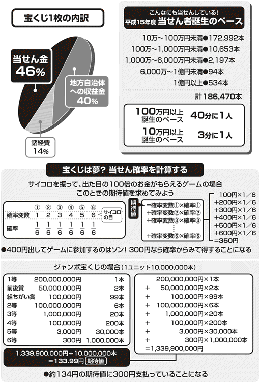

| ［図解］世の中の「ウラ事情」はこうなっている（愛蔵版） | |
| 日本博学倶楽部 | |
| PHP研究所 (2005) | |
［図解］世の中の「ウラ事情」はこうなっている（愛蔵版）
日本博学倶楽部
知られざる「ウラ事情」が満載――まえがきにかえて――
ニュースで「当選確実が出ました！」という選挙速報。でも、開票はまだ終わっていない。では、この「当確」はだれがどうやって割り出したのだろう？
また、「関係筋の話によると...... 」という新聞記事を見かけることがある。しかし、この「関係筋」とはいったいだれのことなのか？ そもそも信用できる情報なのかと疑ってしまう。
このように、私たちのまわりには、ふだんは何気なくやり過ごしてしまうようなギモンがたくさん隠れている。
本書では、日常生活を中心に、宝くじの当たる確率から政治家のパーティの舞台裏まで、ありとあらゆる世の中のウラ側を徹底調査。巧妙に張り巡らされたカラクリの中に潜む社会の真の姿を暴いていく。見過ごしていた生活の「ウラ事情」を知れば、つまらないと思っていた毎日が、もっと刺激的になること請け合いである。
目次
きれいになりたーい でもちょっと待った！ 美容整形 にかかるお値段
どうしてそこまで安いのか？ 格安ツアー のカラクリはこうなっている
ファッション誌が「今年の流行色」を先取りして知らせることができるのはどうして？
よく目にする「オープンプライス」。なぜこんな価格になっているの？
発行部数は事件しだい！ 街中で配られる号外は何を基準に発行されているの？
古本屋ってそんなに客の出入りが激しくないのにどうしてやっていけるの？
裁判に負けそうなときは不起訴!? 刑事裁判での有罪率が高い本当の理由
PART2 ふと気づいた身近な「？」 思わずナットクのウラ事情
バーコード はすごかった！ あのしま模様に隠されたしくみとは？
ついつい買ってしまう テレビショッピング そのマジックを明かす
＊本書は、『図解 日常生活のウラ事情』『世の中の「ウラ事情」はこうなっている』『まだまだあった！ 世の中の「ウラ事情」』（以上ＰＨＰ研究所）を加筆・再編集したものです。
自己破産予備軍今や二〇〇万人以上！
どうにも金の工面がつかず、すぐに返すつもりで借りたのに、気がついたら途方もない金額になっていたという話は、今の不況のまっただ中、他人ごとではなくなってきた。
ブランド品が欲しいから、海外旅行の費用のために、という遊興費に使う借金ではなく、生活費の一部や、会社の支払いに充てるための借金である。
その借金が返せず、別の金融業者から借りて返すという雪だるま式に借金を増やす多重債務者が多くなっている。
特に、この多重債務者に対しての、取り立て屋たちのしつこい督促行為は、債務者を精神的にも圧迫し、もう死ぬしかないという結論を出すまでに追い込まれるのだという。
そんな借金地獄に陥った人たちの救済制度が、実は「自己破産」なのである。
今や自己破産の予備軍は約二〇〇万人いるといわれる。
自己破産は本当に天国なのか？
自己破産とは、借金の返済が不可能になった債務者が、現在持っている財産のすべてを出し、それを債権者に分配し、それでも残った借金は免除されるという制度。
もし不動産などのめぼしい財産がない場合は、破産宣告の時点で同時廃止が決定され、破産手続きが終了することになる。
しかし、破産手続きが終了しても、以後の支払い責任が免除される免責申し立てをして免責決定にならないと、借金は帳消しにならず、支払い地獄は続く。
破産宣告をされてから免責までの期間は、自分の財産を管理する権利を失い、裁判所の許可なしに旅行などに出かけることもできないなどの拘束があるが、免責決定後は、すべて解消する。
ここで、気をつけなければならないのは、借金の保証人がいる場合、一緒に自己破産の申し立てをしておかないと、債務の支払い義務が残ってしまうことがある。
免責決定後、取り立ての地獄からは逃れられても、五～七年は新たに借金やローンは組むことができないし、また、官報に名前が公告され、周囲の知るところとなってしまうなどのデメリットを背負うことになる。
しかし、死のうとまで思い詰めた借金苦からは逃れることはできる。
同じ過ちを二度とくりかえしたくないという人には、まさに天国のような制度なのである。
悪意の脱税者がおそれるマルサの正体
毎年、確定申告時期になると、頭が痛くなる納税者もいるようだ。
自分の気持ちに悪魔がささやき、所得隠しなどわからないはずだと考えてしまう。まして、申告するのは、自分が稼いだ金じゃないか、これぐらいは大目にみてもらいたい...... 。
こんな気持ちで確定申告したら、忘れたころに国税局から突然マルサが訪ねてきて、家宅捜索され刑事告発、そして裁判ととんでもない目に遭うことになる。
国税局の通称マルサと呼ばれる査察部が行う「強制調査」は法的強制力をもっていて、調査が入ったら素直に受けなければならない。ただし、強制調査権はもっているものの逮捕権まではもっていない。
調査には、国税徴収法に基づく事務処理のための調査と国税犯則取締法に基づく臨検捜査や差し押さえがある。
ほかに税務署が行う「任意調査」がある。これらの調査は、納税者により申告が行われた後、税務調査で誤りが発見されたときに実施される。
素直に誤りを認めて修正すれば許してくれる
故 伊丹 十 三 監督の映画『マルサの女』で一躍有名になったこのマルサ。いったいどんな活動をしているのか？
マルサが脱税を見分けるのは、なんといっても伝票チェックなどの地道なデスクワークだ。景気のいい業種に的を絞り、同業他社との比較調査で疑問点を見つけだす。脱税者にしたら、静かに時が流れて油断しているときが、税務調査の大詰めなのだ。
調査に調査を重ね、これだとしっぽをつかんだら、いよいよテレビでよく流されるガサ入れ（強制調査）である。その間、証拠隠滅を避けるために、内偵から強制調査まで秘密裏に行われる。
だから、ガサ入れがあった時点で、右往左往してももう遅い。どんなに裏帳簿を隠してもマルサは先刻承知というわけだ。強制調査が入ってしまったら、刑事告発され、裁判になることを覚悟しなければならない。
しかし、伝票チェックの段階で、誤りが発見されて、強制調査や任意調査が入っても、あくまで自分に後ろめたいところがなければ、帳簿や申告の適正チェックをしてもらう。
そして申告を変更したり納税指導を受けて、素直に申告のやり直しをすれば、悪質でない限り、「修正申告」「更正」をして不足分を納税するだけですむ。
ついに日本も水を買う時代に
日本は水の国といわれ、かつては日本国中どこで飲む水もおいしかった。しかし、河川の汚染がすすみ、水道水にカルキ臭が残るようになると、健康を考えて水を買うようになってきた。
ヨーロッパのように、飲む水は買うという習慣のある人たちは、味やミネラルにこだわり、料理や健康のためにと、水の種類を使い分けている。
日本でも、ミネラルウォーターと銘うって販売されているペットボトルの水だが、輸入品をのぞいて、日本で販売されているモノは、おおむねミネラル成分の低い軟水だ。
日本ではミネラルウォーターの種類は、溶け込んだミネラルと処理方法により、細かく四つに分けられている。 ナチュラルミネラルウォーター、 ナチュラルウォーター、 ミネラルウォーター、 ボトルドウォーターである。
は特定の水源から採水された地下水で、ミネラル分が多く溶け込んでいる。処理方法も、 濾 過 、沈殿、加熱殺菌のみである。
も特定の水源から採水された地下水だが、ミネラル分の溶解度が低い。処理方法は と同じ。
はミネラル成分が多く溶け込んでいる地下水だが、ミネラル成分を調整している。
は原水のミネラル成分を大きく変えたり、水道水を混ぜ合わせたモノである。
このように、ひと口にミネラルウォーターといっても、ペットボトルの中の水は加工されている場合が多いのだ。
汲み上げるために二五円、ペットボトルの容器は三八円
それにしても、いくら昔から名水といわれた水源から汲み上げた水を詰めてあるといっても、二リットル入りのペットボトルが平均二〇〇円というのは高すぎる気がする。その内訳はどうなっているのであろう。
まず水は地下水や、伏流水などで、原価はタダである。しかし、その水を汲み上げるための設備費・工場経費などのコストは一本あたり約二五円。
そして工場でペットボトルに詰められるが、この容器代は約三八円。次に全国各地の販売店に配送するときの物流費が、一本あたり約二三円かかる。この時点で、すでに製造コストは八六円にもなってしまうのだ。
水源から工場までの輸送距離が長くなるほど、コストは上がり、水の価格も当然高くなるというわけである。

株投資家を一喜一憂させる格付けとは？
「日本の銀行ここが危ない」とか「不良債権をかかえる企業トップ一〇〇社」というように、不良債権問題で揺れる金融機関が週刊誌をさわがすときに、よく格付けという言葉が登場する。
○○ 銀行Ａａだとか、○○ 信託銀行Ｃａａといったアルファベットで表示されていることが多い。この数文字のアルファベットによって、企業を経営危機に陥れることもあるというから、格付けの威力はおそろしい。
さて、このように市場の鍵を握る格付けのカラクリはどうなっているのだろうか。
格付けとは、公正な機関が、銀行などがかかえる債権の安全度や、会社の社債の債務が契約通りに元利支払いされているかという信用度を、客観的にランク付けしたもの。
日本の格付けというのは当初、社債を発行するための適正基準が設けられていて、財務指標による基準を達成していないと社債が発行できなかった。
しかし、一九八七年に旧大蔵省により国内企業の適正基準が緩和され、一定の格付けを取得していれば、起債ができるようになったのだ。
その後も数回にわたって適正基準は緩和され一九九六年には完全に撤廃された。
このように現在は、格付けの取得は強制ではなくなっているものの、社債の発行の際に、リスクやリターンのバランスを知る基本情報として、投資家に利用されているのが現状である。
なにをどう見て格付けしているのか？
世界の格付け機関としてよく知られるところでは格付投資情報センター（Ｒ＆Ｉ）、日本格付研究所（ＪＣＲ）、ムーディーズ・インベスターズ・サービス（ムーディーズ）など信用できる数社があり、各機関によって少しずつ評価が異なっている。
格付けの対象は、銀行、企業のかかえる債務はほとんどすべてといってよいが、金融商品では、長期債、ＣＰ（運転資金調達のために発行する短期の無担保割引債券）、証券化商品や優良株、保険契約、銀行の預金保有高とかかえる不良債権のバランスなど、広い範囲にわたっている。
たとえば、ムーディーズの格付けはアルファベットを使って九段階に分けられ、投資対象としてはもっともリスクの少ないＡａａのきわめて優良から、投資対象にする見込みはきわめて薄いというＣまでがある。このランクの高い企業ほど、安全性は高く、投資しても安心ということになる。
政治家のパーティでは食べ物が少なくてすむ
一流ホテルのバンケットルーム前の「○○ 君を励ます会」という文字に、政治家の名前が増えてくると選挙が近い。なぜなら、ここで開かれるパーティは、楽しく飲食して、親交を深める会ではなく、資金を集めるためにパーティ券を売るのが目的の会なのだから。
一見パーティは、一〇〇人程度の人々が、手に手にグラスを持ち、政治家を囲んで、歓談しているようにみえる。もちろん料理も一流ホテルの料理が並んでいるし、飲み物もある普通のパーティだ。ところが、その裏には、こんなカラクリがある。
パーティ会場に参加しているのは、一〇〇人程度なのだが、実はこのパーティ券は、その一〇倍、約一〇〇〇枚は売られている。しかし、パーティに出席するのは一〇〇人程度で、当然、料理も最初から一〇〇人分しか用意されないのだ。
「励ます会」に励まされるのは政治家のふところ
このパーティが、政治家が選挙に出るための資金集めの手段となるのにはどんなわけが隠されているのだろうか。
選挙資金に充てられる資金というのは、国から支給される歳費と政党から支給される助成金があるが、これだけのお金では、とても戦えないのが現実。
いかに選挙資金を多く集められるかが、これまでの政治家秘書の腕の見せ所であった。しかし、汚職問題がマスコミでクローズアップされるようになると、企業・団体の献金など危ない橋は渡れない。
そこで、パーティを開いて資金を集めるのであれば、名目もたち、お金も浄財であるというわけなのだ。
パーティの売上金の六〇％が軍資金に
パーティ券の売上金は、いったいどの程度、選挙資金として活用されるのか。
たとえば、パーティを開くとき、秘書は一枚二万円のパーティ券を一〇〇〇枚用意する。完売すれば、二〇〇〇万円の現金になるが、パーティ券なので、パーティ開催の費用がかかる。
その他に、地方議員や後援会に大量の枚数を売ってもらうために金をキックバックすることもあり、それらを差し引いた一二〇〇万円ほどが、資金となるというわけだ。
最近はセミナーやシンポジウムと名を変えて、パーティーではなく勉強会として年会費を集めるやり方もある。
電車に乗せて連れて歩くファッションにもなった超小型犬
バッグの中に、ヒョイと入ってしまうような犬を連れて電車に乗っている女性をみかけることが多くなった。バッグの端から、ちょこんと顔だけ出している姿をみかけると、犬好きな人なら「私もあんな犬が欲しい」と思うものだろう。
このような超小型犬が流行してきたのにも理由がある。現在、日本では犬を飼っている世帯は、爆発的に増加しているが、昔のように、番犬として庭につないで飼うというより、愛玩犬として室内で飼う人の方が多くなってきたのだ。
加えて、昔では考えられなかったペットのための施設が整ったマンションができてきたため、女性が犬を飼う機会が増えたのだ。
そこで、登場してきたのが、小型犬よりさらに小さい超小型犬なのである。
かわいい上に飼いやすいのが人気の秘訣
ペットと一緒に住めるマンションで、好まれて飼われている超小型犬は、犬種にもよるが成犬になっても約六キロぐらいまでの大きさである。
家の中でも場所をとらず、運動も大型犬に比べて少なくてもよい。その上、食事の量も少なくてすむので、餌代もかからない。
こんな手軽さと現代人のストレスを癒してくれるかわいらしさが受けて、超小型犬に人気が集まっているのだ。
そんな小さな犬をどうやってつくるのか？
ブームの中、超小型犬だけを扱うペットショップも現れた。ある販売員に聞くと、超小型犬は、未熟児や小型犬の中の単なる小さい部類の犬ではなく、ブリーダーによってつくられた健康的な固定品種だという。
そもそも、犬の祖先はオオカミだが、人間は永い歴史の中で、それを飼い慣らし、さまざまな種類の犬をつくってきた。現在小型犬の代表の一つ、トイプードルも、たまたま生まれた小型プードル同士をかけ合わせ、固定化されてできた品種。
そしてさらに品種を固定化させるため、大型犬と小型犬を人工授精させたり、インブリードやラインブリードという近親交配をくりかえしてきたのである。
実はこの方法は、超小型犬だけでなく、チャンピオン犬を生み出す方法としても、血統書のついた犬なら、よく行われている手法である。
きれいになりたーい でもちょっと待った！ 美容整形にかかるお値段
今や当たり前!? 市民権を得た、整形美人
整形美人という言葉が、女子高校生の間では、なんの抵抗もなく受け入れられるようになってきた。かつては、タレントの顔が変わると女性週刊誌などに整形タレントと書き立てられ、話題になったものだが、今では、整形して、姿も心も美人になろうというテレビ番組まで登場している。
また、シワを目立たなくさせたり、メスを使わずシミを短時間で取り去ることのできるプチ整形もあらわれ、昔の美貌を維持したい中高年にも大人気である。
整形のためにアルバイト代を何カ月も貯めている女子高校生や、就職の面接のために親がかりの女子大生までいる。今や整形クリニックは、予約が取れないほど忙しい。
整形美人さん、あなたの顔のお値段は？
女性なら、ここをちょっと直せば、胸を張って街を歩けるのにというコンプレックスの一つや二つはもっているものであるが、一カ所だけ直して満足する人は少ないのだそうだ。そこで、気になるのが、整形手術の代金。
まず、お決まりの二重まぶたの手術は二五万円から。最近はメスを入れなくてもいい埋没法というのがあり、こちらなら六万円からある。
目がぱっちりしてくると、鼻の低いのが目立つのよねぇというわけで、人工骨を入れて鼻を高くする手術は二〇万円から。そこまでしなくてもという人はヒアルロン酸という皮膚の真皮の構成成分を注射する方法なら一〇万～一二万円程度。
しかしヒアルロン酸は皮膚と同じ成分なので、安全だが数カ月で吸収されて元に戻りやすい。
プチ整形の花形は小顔というわけでエラやアゴを直す人も多い。エラにボトックス注射をするという方法がある。これは、ボツリヌス菌から出る毒素を薄め血清中のアルブミンを混合させたもので、筋肉の動きを止めてしまいエラの発達を抑える。こうまでしても、美しくなるためにはしかたがない。アゴにはヒアルロン酸を注射して尖らせる。
このほかにも、プチ整形のシミ、ホクロ取りはレーザーで焼き切る方法があり、シミは一発一〇〇〇円から、ホクロは三～四個で一万円ほど。シワにもヒアルロン酸が効果があり、一〇万～一二万円ほどで目立たなくなる。
また、整形より気軽にできる永久脱毛は、ワキとビキニラインがそれぞれ一万円からと、金額もお手頃。
もちろんそれぞれの美容整形外科によって値段は変わってくるので、よく調べてから受診することだ。
検証！ やっぱり夢で終わるのか？
どうか、当せんしますようにと願いを込めて宝くじを買い続けている人がいる。初めから当たるわけがないと買わない人もいる。
二〇〇三年の年末ジャンボ宝くじは、五三四人の億万長者が誕生する設定になっていたのだから、当たりそうな気もする...... 。そこを数学でどうにかできないものか。宝くじが当たる確率を検証してみよう。
まず、そもそも確率とは可能性を数値化したもの。どんなに数値が少なくても可能性はあるのだ。
つまり、長い間、試し続けていれば全体の中で、これくらいの割合で発生するかもしれないということ。だから、宝くじを一生買い続けていても当たらないこともあり得る。
それを判断する根拠となるのが期待値だ。
サイコロで説明すると、サイコロの一から六までの目が出る確率はそれぞれ六分の一で、一から六までの目の数を確率変数という。確率と確率変数をかけてすべてを足した数字が期待値（平均値）となる。
たとえば、一から六までの数字が出たら、その数字の一〇〇倍の金がもらえるゲームをすると、期待値は三五〇円になる。これは、このゲームに四〇〇円で参加するなら損で、三〇〇円でやれるなら得という数字である。これは何回も続けてやった場合の数値だが、一回だけで四〇〇円以上もらえる確率も三分の一はあるということだ。
宝くじの期待値はたった一三四円!?
サイコロの数字の期待値を実際の宝くじに当てはめて計算してみると、次図のような計算になり、一等・前後賞合わせて三億円の年末ジャンボ宝くじの期待値はたったの一三四円。
この結果を見てみると、一三四円しか儲からないのに、一枚三〇〇円も払っていることになるので、買い続ければ、夢を買うどころか損を増やしているだけという結果に...... 。
この期待値の数字を見て、買うのをやめようと決意した人もいるだろうが、それでも続ける人に、高額当せん者誕生のペースを教えておこう。平成一五年度の一〇〇万円以上の当せん者は、なんと四〇分に一人の割合で誕生しているのだ。
さあ、あなたは買い続けるか？ それともやめるか？

公共料金はだれが何のために設定するのか？
私たちが支払っている公共料金というと、電気・ガス・水道がまず思い浮かぶが、この三つ以外にもある。国会や政府、地方公共団体といった公的機関が直接かかわっているものを総称して公共料金と呼んでいるのだ。
たとえば、郵便料金や国立学校の授業料、米麦の政府買い入れ・売り渡し価格、それに社会保険料や介護保険料がある。また、政府が認可するものに、鉄道料金、加入電話などのサービス料金、バスの運賃、タクシー運賃、高速道路通行料金なども含まれる。
このほかに電気・ガス料金の引き下げや鉄道・バスの運賃の上限価格の改定などにおいては政府に届け出る必要があるし、水道料金や公立学校の授業料、公衆浴場の入場料などは地方公共団体が決定するものとして分けられる。
では、なぜ公共料金を設定する必要が出てくるのだろうか。
私たち消費者は料金が高ければ買う量を減らし、安ければたくさん買おうとする。一方、売る側は、安い料金のものは生産販売を減らし、高く売れるものを多く生産販売しようとする。
ここで、自由市場によって需要と供給が調整され、価格が決まっていくのであるが、電気、ガス、水道といった巨額な設備投資がかかる場合、一括で行った方がコストが低くなる。この独占を認めるかわりに、公平な供給の安定性をはかる。
そこで、不当な利益を得ないように政府が価格を規制するというわけなのである。
公共料金を決めるシステムはどうなっているのか？
電気・ガス・水道などのライフラインの場合、利用する側の料金負担は自分が使った分に応じて、原価に見合った額を支払う。
事業者の方も、このサービス提供にかかる原価を過大な利益や損失が出ないように利用者からの収入で賄わなければならない。
そこで、公共料金では多くの場合、総括原価方式というシステムを採り入れている。
総括原価方式は、基本料金を設定して、その上自分が使った分の料金を支払うという料金体系である。事業者側の人件費や減価償却費などの営業費用と、資本投資や施設維持費といったコストが収入と一致するように公共料金を決めているのだ。
したがって、各電力・ガス会社などによって、当然、原価も違うことから、各地域で公共料金は異なっている。
どうしてそこまで安いのか？ 格安ツアーのカラクリはこうなっている
大型連休やシーズン中の旅行は損？
旅行に行こうと思い立ったとき、一番気になるのはどのツアーで行ったら、一番安くなるかという点だろう。
集めてきたパンフレットを並べて、あれでもないこれでもないと見比べているうちに、一つの法則に気づくはずだ。
大型連休や年末年始、夏休み、春休み、または、観光シーズンのまっただ中のツアーは、割引率が少ない。
それはつまり、大多数の人が会社や学校の休みに合わせて、旅行をするという傾向にほかならない。当然ながら、鉄道や飛行機も満席に近いし、ホテルや旅館もいっぱいで、特別に割引きなどしなくても鉄道や航空会社、宿泊先は集客できるのである。
ところが、休みを一日でも過ぎるとツアー料金はぐんと安くなってしまう。
格安ツアーはシーズンオフに多い
それにはこんなカラクリがある。
観光シーズンに混み合っていた鉄道・飛行機や宿泊先も、休みが終わったり、観光シーズンが過ぎると、とたんに客足が遠のき、売上げががた落ちになってしまう。
そこで、一九九六年の幅運賃制度導入に引き続き、二〇〇〇年には航空法が改正されて事前に届け出さえすれば、各航空会社が自由に料金を設定できるようになった。
そのため、ガラガラの座席で、空気を運ぶよりはましと、航空会社は旅行代理店に安い料金の航空券を売り出し始めたのである。
もちろん、鉄道にしてもガラガラの電車を走らせるのは無駄なので、鉄道会社の代理店子会社にツアーを組ませて、席を埋めるという方法をとり始めたのだ。
宿泊側も、空いているときに従業員を使って人件費をかけたくない。その点、観光つきのツアーなら、夕方六時にチェックインして、明朝八時に出発、バイキング料理でも満足してくれるので、従業員の数は少なくてすむ。
その上、宿泊料がたとえ赤字でも、レストランやルームサービス、おみやげ代などで儲けを出すことは可能だ。
というわけで旅行代理店は、シーズンオフになると割引ツアーを考えて売り出そうとする。
休日を利用しなくても、旅行に行けるのなら、シーズンオフや、早朝便などを利用するツアーを探すと、同じ交通手段で、同じホテルに泊まっても半分の料金なんてこともあり得るのだ。
予算を決める それは一年がかりの大仕事
日本の国家予算は、平成一七年度は約八二兆二〇〇〇億円。この予算を決める大仕事は、通常国会の仕事である。通常国会は、一年に一回、毎年一月に召集され一五〇日間開かれる。議題は四月一日から始まる翌年度の予算や関連の法案審議で、三月三一日の予算成立に向けて、審議が続く。
予算は一五〇日間で決まるほど簡単ではない。まず、予算案は前年の八月三一日までに、財務大臣に提出しなければならないから、各省庁はそれよりかなり前から準備を始める。
実は遡ること四月、その年の予算が決定したばかりのころに財務省は、次年度の予算見積り編成方針を各省庁に送る。各省庁は、それをもとに、次年度に必要な概算要求を提出するのだ。
しかし、その段階ではその年の予算を使い出して、まだ、五カ月しかたっておらず、予算が適正であったのかわからないまま次年度のことを考えなければならない。その結果、年末になると予算使い切りのための国道工事が増えるという事態がおこるのである。
年の瀬の風物詩 復活折衝の道のり
提出された概算要求は、財務省主計局で査定され、財務省原案という予算原案になる。一二月の下旬までに閣議に提出され、各省庁の担当議員にお伺いを立てる。その段階で、国会議員の意見が反映されているはずであるが、決まった原案に異議がある場合に行われるのが、復活折衝というもの。
年末のニュースで、復活折衝している映像は、年の瀬の慌ただしさをいっそう際だたせている。
この復活折衝は、各省課長と主計局主査、各省局長と主計局主計官、各省次官と主計局次長のあいだでつぎつぎと行われる事務折衝、各省庁の大臣と財務大臣で行われる大臣折衝があり、そこでも決着がつかないときは自民党の幹事長、政調会長、総務会長の三役で行われる政治折衝までいくのだ。
再三の交渉で、完成した政府原案は一月に開かれる通常国会に提出され、まず衆議院予算委員会で審議・決議される。その後、参議院予算委員会、参議院本会議に回され議決を経て、晴れて予算成立となる。
これが三月三一日で、四月から実に一年をかけ、国家予算は決定されていくのである。
毎日毎日吐き出される使用済み切符の行く末
ＪＲ新宿駅は、一日の乗降客の数が日本一といわれている。そのほとんどが通勤通学客で、定期券やＳｕｉｃａ（スイカ）を使っている人だとしても、改札機に回収される切符の数は、半端な量ではない。
大量の使用済み切符の行く末はどうなっているのだろうか。
ＪＲ東日本は一九九三年から使用済み切符のリサイクルを始めている。切符はもともと金券ということで、精算のチェックを終えてからの処分になるので、ゴミとして出される一般の紙とは別のルートで再生されている。
全社で回収した年間およそ八〇〇トンの使用済み切符を、まず紙の部分と磁気部分に分離する。
その技術が進み、九九％がリサイクルされ約五割がトイレットペーパーに、残りは社員が使用する名刺や段ボールに変身している。
今はほとんど自社で使用しているというからＪＲ東日本各駅構内のトイレにあるトイレットペーパーは、かつて切符だったことになる。
また、回収した使用済み定期券も固形燃料として再利用されているが、Ｓｕｉｃａの導入によってその量は大幅に減ったという。
そのほか、ＪＲ西日本のリサイクルの取り組み方もスゴイ。回収された使用済み切符の一部をパルプ工場でパルプ化したあと、建材メーカーと協力してセメントと混ぜ合わせ、住宅用外壁材として再利用しているのだ。
徹底的にリサイクル 定期券がベンチにまで
これくらいで驚いてはいられない。さらに本格的に使用済み切符のリサイクルに力を入れている私鉄もある。京阪は、回収切符を炭にして、脱臭効果のある活性炭を開発。電車の形をしたかわいいボックスに入っていて人気を博している。そして、第二弾として切符をリサイクルして、満員電車の疲れを癒す香りのお香も製品化した。
ほかには、京王や名鉄の取り組み方は大がかりだ。京王は使用済み切符から植木鉢、定期券の原料ＰＥＴ（ポリエチレンテレフタレート）からは駅構内に置かれているベンチをつくっている。名鉄ではそのほかに、ＰＥＴを混ぜたコンクリートの車止めや、使用済み切符を再利用した擬木を、駅のまわりの柵に利用している。
このように、小さな紙切れの切符でさえ、見逃すことなく再利用する姿勢はすばらしい。切符以外のゴミの分別もきちっと行い、有効資源のリサイクルにどんどん取り組んでいってほしいものだ。
五〇年日本人の食卓を支えてきた卵
日本人は江戸時代から卵を食べてきたといわれる。今では、マヨネーズやパンなどに入っている卵を含めれば、現代人は一日約〇・八二個の卵を食べている計算になる。
驚くことに卵の値段は、五〇年前とほとんど変わっていない。五〇年前と現在の物価の違いを考えてみればふしぎなことだ。
半世紀前の物価で、卵は一個一〇～一五円だった。そして現在、卵は一〇個入りパック一五〇～二〇〇円で一個にするとやはり一五～二〇円のままなのだ。
半世紀でこのようなことが可能になったのは、養鶏農家が生まれ、卵の大量生産ができるようになったことに起因している。
脱アルバイト 卵を生産する農家誕生
ニワトリは、以前は農家の庭先で放し飼いにされていた。そこで生まれた卵を集めて出荷するという、言わば、農家にとって養鶏はアルバイト的な仕事だった。
そこにニワトリをケージに並べて養鶏をする農家が登場してきて、卵の生産量は大幅に伸びた。市場に安く出回ってくると、卵の需要も伸び始めた。
専門に養鶏だけを大規模に経営する養鶏農家もあらわれ、輸入飼料でコストダウンを図ったり、卵を多く産むニワトリを、品種改良するなどの努力が実を結び、供給が増えてきたのである。
安定供給の中で工夫されている卵の値段
大規模養鶏農家の出現により、飼育規模はますます大型化され、卵の市場は飽和状態になってしまった。しかし、卵は冷凍保存がきかないので、出荷を止めることができず、ときには、原価を割ることさえあるという。
現在、養鶏されているニワトリは約一億羽いるといわれている。
雛が成長して卵を産むようになるまで、一五〇～一六〇日ほどで、産みはじめてから一カ月が産卵のピークとなる。その後一〇カ月～一年ほど産卵期間が続く。ピーク時のニワトリは一日一個、それ以降でも三日に二個の割合で卵を産み続ける。
卵はマヨネーズなどの加工用とテーブル・エッグに分けられるが、テーブル・エッグの販売価格を伸ばすため、最近では地鶏卵や平飼いなどの付加価値のついた個性的な特殊卵の販売に力を入れている。
ノーベル賞受賞 決定までのそのプロセス
二〇〇二年、日本は一つの快挙を成し遂げた。小柴昌俊氏と田中耕一氏の二人がノーベル賞を同時受賞したのだ。これによって日本でノーベル賞を受賞した人は一二人になった。
ノーベル賞は物理学賞、化学賞、経済学賞の場合、王立スウェーデン科学アカデミーで選考され指名決定される。医学・生理学賞は、カロリンスカ医学研究所で選考、決定され、文学賞はスウェーデン・アカデミーが選考し、決定する。平和賞だけは、ノルウェーの国会で任命された選考委員により指名、決定されている。
毎年ノーベル賞の候補にあがる人たちは一〇〇人にも及ぶというが、その候補者氏名は発表されない。
決定された受賞者たちはノーベルの命日である一二月一〇日にストックホルム（平和賞はノルウェー・オスロ）で開かれる授賞式に出席、ノーベルメダルと賞状、賞金がスウェーデン国王から贈られる。
高額で知られるノーベル賞の賞金
ノーベル賞は、ダイナマイトを発明したスウェーデンのアルフレッド・ノーベルの遺言によって創設。
ノーベルは、三三歳のときのダイナマイトの発明により莫大な財産を築いたといわれ、一八九六年に六三歳で亡くなるまで生涯独身を通したという。基金はそのときの遺産三一六〇万スウェーデン・クローナ（二〇〇億円相当〈当時〉）に基づいて始められ、現在、その総額は三〇億スウェーデン・クローナ（四四〇億円相当）に達しているといわれている。
ノーベル賞の賞金額は前年のノーベル財団の財政状況によって決定されるため、毎年その金額は異なっている。
基金の運用益や利子の一〇％を基金の元金に戻し、残り九〇％の額が賞金や経費に充てられる。
その賞金の内訳は、経費二五％を差し引いた七五％を経済学賞以外の五つの賞で均等に分ける。一九六九年から加えられた経済学賞の賞金だけは、スウェーデン中央銀行の基金から支払われている。
余談になるが、一九九〇年、ノーベル平和賞を受賞したソ連のゴルバチョフ大統領の賞金は、四〇〇万スウェーデン・クローナ（九〇〇〇万円相当〈当時〉）だった。
大統領はその賞金を全額チェルノブイリ原発事故などの環境汚染被害を受けた子どもたちの医療品購入に充てるために寄付している。
立派なお葬式でさぞかし本人も......
今の世の中で、値切れないモノは、結婚式の値段と葬式の値段の二つだそうである。
葬式の場合、生前葬を行っていたり、事前に葬式の準備をしているという用意のいい人をのぞいて、葬式は急ごしらえで、葬儀屋任せになるため、いわれるままの葬式を行ってしまうものだ。だから、あとから割り引いてくれとはいえない。
これだけ必要になる葬儀の準備
葬式の値段の設定は、平成三年の統一料金廃止から、葬儀屋が自由に決められるようになっている。
まず、仏式の葬式には、祭壇、枕飾り、白木の位牌、線香、ロウソクなどの消耗品、受付設備、案内看板、後飾り、通夜葬儀準備などが基本のセットになっていて、このセット料金が、最低一〇万～一五〇〇万円までと大きな幅がある。
ここで値段に幅が生じる一番の原因は、祭壇の飾りである。
そのほかに、用意しなければならないのは、棺、遺影、ドライアイスなどの防腐処理、寝台車、霊柩車、親族のためのハイヤー、マイクロバスなど意外と多い。
遺影、防腐処理、寝台車、ハイヤー、バスなどは、だいたい値段が決まっているが、棺や霊柩車は選ぶことができる。
これだけではない。
葬式には生花が必要で、一基一万五〇〇〇円から二万五〇〇〇円ぐらいであるが、祭壇の隙間を生花で飾り立てるために、大量に用意される場合もある。
ただの火葬ではない？ 特別賓室ってナニ？
通夜、告別式が終了し火葬場に向かうのだが、ここでも差が出てくる。料金は公営の場合無料か数千円程度であるが、民営の火葬場では火葬料金が中等、上等、最上等、特別最上等と上がっていき、一七万円もかかる特別賓室という最高ランクまである。
しかし、特別最上等以上でも火葬の仕方が変わるわけではなく、扉に豪華な装飾が施されていたり、親族が待機する部屋の広さやインテリアなどに違いがある。
その他、飲食接待費、香典返し費を加え、平均的な葬儀代は約四〇〇万円（基本セット一五〇万円含）になるという。
はたしてこんなに豪華な葬式を望んでいたのかどうかは本人に確かめるすべもないのだが...... 。
看板に偽りなし 同時プリント〇円のヒミツ
最近、街でよくみかける看板に「同時プリント〇円」というのがある。エッ？ タダ!? と秘かに心が騒ぐが、残念ながらタダでフィルムを現像・プリントしてくれるというわけではない。世の中そんなにおいしい話があるわけがない。
しかし、じゃあ、やっぱり看板はウソなのか、とガッカリすることもない。
実は、この「プリント〇円」のからくりはＤＰＥ（現像・紙焼き・引き伸ばし）の三つをどうするかということ。それがわかれば〇円の疑問も氷解する。
まず、ＤＰＥ店には大きく分けると三種類ある。
一つは「同時プリント〇円」の看板を出している店「独立系総合ラボ」。コンビニや、クリーニング店、ドラッグストアなどの取次店からフィルムを回収して現像する。
二つ目は「フィルムメーカー系総合ラボ」。同じように取次店から回収して現像するのだが、取次店はフジやコダックなどのフィルムメーカーの特約店で、印画紙に、フィルムメーカーのものを使用している。
そして、三つ目は「ミニラボ」と呼ばれる店内に自動現像マシンと、自動紙焼きマシンを備えている店だ。ここは「スピード仕上げ」がウリである。
三つのラボで一番おトクなのはどれ？
三つのラボのしくみがわかったところで、次にサービスを比べてみよう。
まず「独立系総合ラボ」の特徴は「同時プリント〇円」だが、この〇円は、プリント料金のことだけで、ほかに現像料が六〇〇～七〇〇円かかる。
「フィルムメーカー系総合ラボ」は、同時プリント代は一枚三五円ほどで、現像料は四五〇円。少々値段は張るが、印画紙はメーカー独自のものを使用し、高品質で、露出の過不足も調整して、きれいな写真に仕上げてくれる。
そして「ミニラボ」は、とにかく仕上がりが早く、現像に出してからわずか三〇分でプリントされた写真を見ることができる。プリント代は一枚三〇円ほどで、現像料は五〇〇円前後だ。
こうしてみてくると、「独立系総合ラボ」のプリント代〇円はやはり安い。ところが、これは最初の一回だけの値段で、二回目以降の引き伸ばしや焼き増しは別料金になる。また〇円という表示に対しては公正取引委員会でも問題視されつつある。
しかし逆に言えば、外国産の印画紙を仕入れたり、現像液を一括購入するなどした努力の結果でもあるのだ。
オンライン書店なら欲しかった本が手に入る？
ネット上でオンライン書店を利用したことのある人も多いはず。出かける手間がかからないうえ、欲しい本が確実に手に入るので、一度利用したらその便利さはやみつきになる。
オンライン書店の利用者は年々増え続けており、今や、ネットを使った書籍マーケットは推定で四五〇億円をくだらないといわれている。
そこで、儲かっているオンライン書店のシステムを分析してみると、成功の秘訣は徹底した在庫管理コストと配送コスト、人件費の削減にあるようだ。それには運送会社と提携して、在庫のリスクを解消することがポイント。
たとえば、注文が入り次第、配送会社のトラックが出版社の倉庫に集荷に行き、そのまま客のところまで宅配するという方法を採用している。
また、専門書や絶版になってしまった本をオンデマンド印刷で欲しい本だけ復刻させる、さらに客単価をあげることで、在庫リスクをなくす方法なども考えられている。
宣伝はアフィリエイト・プログラムという方法で行われている。個人のホームページに広告を貼りつけ、商品の売上げの何割かをサイト運営者に紹介料として還元するシステムだ。
これは一種の成功報酬システムであり、サイトのどこかしらに書籍の通販ＣＭがあるという効果を狙っている。
そのほか、配送コストの削減には、コンビニを利用したり、リピーターを確保し、配送の無駄をなくす方法などで成功している。
座っていても買い物ができるスーパー
忙しい現代人には、欲しいモノがあるのに、買いに行く時間がないというストレスがある。働く女性や、足腰の弱い高齢者、小さい子どもをもつ主婦などは、必要なモノがあっても、なかなか買いに行けない。
そこでＩＤと名前を登録して、二四時間いつでも買い物ができるネットスーパーが注目されている。
この方法は従来のカタログ通販方式で、生活必需品はもちろん、肉や魚、野菜などの生鮮食品にいたるまで、注文した数時間後には、玄関先に配達されるというものだ。
そして、このネットスーパーの成功も在庫管理設備の削減にある。
既存のスーパーの品揃えそのままのカタログを配ったり、ディスプレイ式ファックスで、スーパーがまめに商品情報を流すという方法によって、在庫設備をもたず店舗の売上げをあげている。
ビジネスマンの強い味方 激安スーツのカラクリ
スーツの善し悪しで男の価値が決まるわけではないが、第一線で働くビジネスマンが、スーツをパリッと着こなしていると、仕事もできるような気がする。
かつては「ねずみ色の作業服」といわれるほど、くたびれたスーツを着ているサラリーマンが多かった。そのころのスーツは、値段も高く、高級品というイメージがあり、おじさんたちはもっといいスーツを新調したくても、できなかったのだ。
しかし、最近のビジネスマンは仕立てのよさそうなスーツを着こなしている。
近頃のビジネスマンがおしゃれになったその裏には、格安スーツ店の存在が大きい。
格安スーツ店では、若者をターゲットに絞ったスーツが、一着二万円前後の価格で並んでいる。その数や種類も豊富で、品質も悪くない。
でもどうして、こんなに格安スーツの販売が可能なのだろうか。
海外生産で人件費カット 仕入れ値も半分以下ですむ
こんなに格安のスーツでも、生地もデザインも悪くないし、仕立てもなかなかである。実はこのスーツの価格破壊の秘密は製造小売りというシステムにある。
海外で大量仕入れした良質の素材を人件費の安い国で縫製、逆輸入して販売するのだ。
中国産のスーツ一着分の生地代は、約二〇〇〇～三〇〇〇円で、日本で仕入れる価格の半分以下。この生地を中国で縫製し大量生産すると、工賃は一着あたり一五〇〇円前後となり、これに輸送費や関税を加えても、仕入れ値は一着六〇〇〇～七〇〇〇円ですむ。
しかも、デザインやパターンは中国ではなく、イタリアやフランスなどと業務提携しているため、見た目にも遜色ないのである。
格安スーツを生み出したもう一つのカラクリ
製造仕入れで、大幅にコストダウンされ輸入した製品を、さらに購入しやすくしているのは、大型チェーン店の存在である。委託型の販売ルートでは、流通マージンが発生してしまうが、大型チェーン店は自社販売しているため、流通経費までもカットできるのだ。
オーダーメイドと比較すると、その価格差は歴然である。ユーザー側もそのあたりは心得ているようで、普段のビジネスシーンのスーツは格安店で購入し、ここ一番のためのスーツはオーダーメイドしているという。
改良に改良を重ねおいしい肉牛は誕生した
日本中を震撼させたＢＳＥ（狂牛病）騒ぎで、一時は牛肉を食べるのを控えていた人たちも、やはり霜降り牛肉のおいしさは忘れられないようだ。
かならず毎日牛肉を口にする食習慣のない日本人には、噛みごたえのある脂肪の少ない赤肉より、「さし」と呼ばれるマーブル模様状に、ほど良く脂肪がある肉をおいしいと感じるようである。
日本では現在、肉用種と乳用種を合わせて、食肉になる牛が約二八〇万頭飼育されている。このうち全国食肉公正取引協議会が和牛と許可した種類は黒毛和種、褐毛和種、日本短角種、無角和種の四種類で一七〇万頭ほど。
そして、このうちの約九割を黒毛和種が占めている。
黒毛和種は、古くから中国地方で飼われていた在来種に外国の品種をかけ合わせ改良された役用牛だった。だが、明治になると、外国品種のシンメンタール種、エアシャー種、ブラウン・スイス種を交配して体格や発育、早熟性、飼料効率、泌乳能力のよい改良和種がつくられた。
そしてさらに改良を重ね、昭和一二年に黒毛和種として認定登録されたのである。
黒毛和種の身体の大きさはオスで体高は平均一四二センチメートル、メスでは体高一三〇センチメートルほどで、体重はオス九六〇キログラム前後、メス五二〇キログラム前後である。
黒毛和種は、日本の肉用牛のうちでもっとも肉質がすぐれているとされており、最近では、乳牛に黒毛和種の受精卵を使用し霜降り肉牛の生産をあげている。
細かく定められている肉質ランキング
肉店に並べられている牛肉は、出荷された時点で、専門家によって肉質ランキングが決められている。
肉質ランキングは牛の第六～七肋骨の間の部分で行われ、脂肪交雑（霜降り具合）、色、しまり、きめ、脂肪の色と質によって五等級に分けられる。
とくに脂肪交雑（霜降り具合）については一二の判定基準で評価され、さらに五等級に分けられている。
日本人好みの霜降りの牛肉は、このように改良された和牛によって、生産されているが、よい脂肪を効率よくつけさせるため、酪農家が研究を重ね、飼料にふすまや大麦、トウモロコシなどを混ぜて与えるなど、やわらかい霜降り肉をつくるための努力もされている。
見直されてきたリサイクル業界
若者を中心に流行したウン十万円もするビンテージジーンズの店や、古着をファッショナブルに着こなしている女優が話題になるなど、捨てられる運命だった古着がふたたび見直されている。
中古屋という、何となく古めかしい印象や、一部の愛好家だけを対象にしたマニアックな店のイメージを払拭し、ふらりと立ち寄りたくなるような品揃えの豊富なリサイクルショップも目立つようになってきた。
また、郊外型のリサイクルショップでは、広い駐車場をもち、服はもちろん、日用品から家具、電化製品まで取り扱い、休日には家族連れでにぎわっている。
成功する秘訣はまず商品のラインナップ
リサイクルショップの店長の腕の見せ所は、なんといっても商品のラインナップ。品揃えの違いで、店の雰囲気はがらりと変わる。
ビンテージものを中心に扱う店のある店長は、自分の目を信じて、海外まで買いつけに行く。向かうのは、主にアメリカの地方で、日の目を見なかったデッドストックをかぎつけて大量仕入れしてくるという。
業者間で開かれるオークションで、ブランド品や高級時計を競り落としたり、メーカーからのワケあり商品を仕入れる方法もある。
そして、重要な役割を担っているのが、個人客からの持ち込み。システム化された大手のリサイクルショップチェーンでは、服や靴などの委託を行っており、売り上げの五〇％から七〇％をバックするという規約がある。
また、宝石などを買い取り、加工し直して販売する店もあり、新品と変わらない品質のよさだ。
仕入れだけではない こんな努力もしている
大手のリサイクルショップの販売価格は市価の約五分の一程度であるという。
また、個人客の持ち込みの場合、一五点ほどまとめての委託で、売れなかったときの処分費として客が先に金を支払うというシステムもある。ブランド品は信用できる筋からしか預からないというショップもあり、一カ月以内に売れないときは、返品して品揃えの回転をはかっている。
リサイクル品とはいえ、いまや消費者の品質と価格への要求は高くなっている。これに応えるために、リサイクルショップは目には見えない努力をしているのである。
ファッション誌が「今年の流行色」を先取りして知らせることができるのはどうして？
かつては女学生向け、独身女性用、主婦になったら...... くらいのグループ分けしかなかった女性誌が、世代別にどんどん読者対象を細分化していき、その種類を増やしつつある。手にとってパラパラめくれば、登場するモデルや扱われているファッションによって、そのターゲット年齢を判断することができる。
ところが、そのどれにも共通していることがひとつある。「今年はこの色を着たい」「いま、この色が新鮮」「今年はやりの色を小物に取り入れる」といった見出しで扱う色が、必ず同じということだ。
つまり、記事のスタイルとしては「いまこの色が流行しています」ではなく、「今年の流行色はこの色」と、シーズンに先がけて宣言している点。そしてまた、そのとおりの色のさまざまなアイテムが、デパートやブティックをにぎわすことになる。
もちろん女性たちはこぞってその色を身につけ、結果として流行色になってしまうのだが、なぜこんな予言ができ、実際にそれが当たるのだろうか。
実は女性誌の記事は、「今年はこの色をはやらせる」というファッション業界のしかけに、そのまま乗ったウケウリなのだ。一九五三（昭和二八）年に設立された「日本流行色協会（ＪＡＦＣＡ）」が、その色を決めているのである。
この団体は、ファッションメーカーやデパート、スーパーなどの販売関連企業、デザイナーにマーチャンダイザーも会員になっていて、商品開発や販売計画をスムースにしようと流行色を勝手に決めているわけ。
さらに、これを世界規模にしたインター・カラーという組織もあって、そこは二年先の流行色を予測・発表しているというから、もはやだれも逆らえないのがこの流行なのである。
よく目にする「オープンプライス」。なぜこんな価格になっているの？
家電製品のカタログなどを見てみると、「メーカー希望小売価格」と書かれているものと、「オープン価格」と書かれているものとがある。
日本では昔から、メーカー側がある程度価格を支配してきた。たとえば、メーカーが一万円で売りたいと思ったポットを、六〇〇〇円で卸す。卸売業者は七〇〇〇円で小売業者に売る。小売業者は、メーカーの希望どおり一万円で売れば、差し引き三〇〇〇円の利益が出ることになる。
ところが、ディスカウントストアの登場で、この価格支配が大きく崩れた。たくさん仕入れてたくさん売るので、本来設定されていた価格よりもかなり安くすることが可能になったのである。「メーカー希望小売価格○○ 円のところ、×× 円」などという表示がそれである。
それならば、いっそのこと希望小売価格をやめてしまおうということになったのが、オープンプライスなのだ。これは、小売店が自由に価格設定することができるもので、新発売のときから価格設定が自由なものと、型が古くなったときにオープンプライスにするものとがある。
オープンプライスは、日用雑貨などで普及し、一九七〇年代には家電製品にも使われるようになった。パソコン業界でも、一九九二（平成四）年にアップルコンピュータが導入したのに続いて、日本ＩＢＭ、日立製作所、ＮＥＣなどにも広がっている。
ただ、オープンプライスは、「メーカー希望小売価格」と比較できないので、値引き感が出にくいのも確かだ。そこで、客にアピールするため、「当店平常価格」を併記して、値引き感を出すことも多い。
そこで増えてきたのが、一度も売ったことがないのに「当店平常価格」を値札に併記している店。ただし、この価格表示方法は、値引き前の価格で一定期間の販売実績がないと景品表示法違反となるので、公正取引委員会から警告されたスーパーもけっこうあったそうだ。
発行部数は事件しだい！ 街中で配られる号外は何を基準に発行されているの？
とつぜん街中で配られる「号外」。読んで字のごとく、発行号数を記さない例外的な新聞のこと。通常発行の新聞が印刷されたあと、もしくは配達したあとに起きた特大ニュースが書かれている。
でも、いったい何を基準に発行を決定しているのだろうか？
スポーツニッポン新聞東京本社に問い合わせてみたところ、「号外を出す基準は、社会的にインパクトが強い、突発的なもの、話題性の大きいもの」とのこと。また、入稿を終えた時間帯は会社にいる社員が少ないので、人を集めるのもひと苦労なのだという。
一般紙の号外が、「ニューヨーク同時多発テロ」や「皇太子妃に小和田雅子さん」など社会的なニュースが多いのに対して、スポーツ紙の号外は、日本人選手のオリンピック金メダル獲得や、一九九二（平成四）年に長嶋監督がドラフトで松井を引き当てた「松井巨人」など、一般紙には見られない号外を発行している。
つまり、明確な基準はなく、各社の独自の判断で発行されているというわけ。
号外とひと口にいっても、大都市で配るものから、選挙結果を関係地域内で配布するものまで、その規模や配布地域はさまざま。変わりダネとしては、駅やデパートなどの人目につきやすいところに掲示する「張り出し号外」などもある。
それゆえ発行部数には、かなりの幅があり数百から数十万部。要するに、そのトピックの重要性や配布地域によって大きく変わってくるのだ。
配布するのは、社員やアルバイト。主要駅や人通りの多い街頭、テレビ局の近くなど、人々の注目を集めやすい場所で配るのがコツらしい。
マンツーマンで顔を合わせて借金する気まずさから解放してくれる、それがウリの消費者金融自動契約機。各社がそれぞれ親しみやすいニックネームをつけて、テレビＣＭでもおなじみである。
パソコンのディスプレイそっくりの画面に手続き方法が次々に示され、それに従っていくとお金が借りられるしくみだ。本人の確認のために、健康保険証か運転免許証を機械の端末にかけてチェックすることになっているが、偽造やコピーは確実に見破られることになっている。
というのも、この無人機械は近くのその会社の支店や受付センターと通信回線で結ばれており、審査端末とつながっているのだ。つまり「無人」とはいえ契約機の先には必ず社員がいるわけ。
この社員は、提示された免許証の氏名や生年月日を手がかりに、金融・クレジット会社などと契約している信用情報機関に問い合わせを入れ、ほかに借金がないかどうかの確認をしている。健康保険証なら会社に電話を入れ、本当に在籍しているかどうかを尋ねることもあるという。
ということは、顔を直接見ることがないというだけで、審査にはやっぱり三〇分はかかるし、場合によっては契約機に付属の電話で直接会話したりもする。「無人」はその場に人がいないだけだったのだ。
洗剤、ビール券に野球チケットなどは当たり前、バスタオルが配られたり、
「ほかの家には内緒だよ」
と、ポットやらコーヒーメーカーやら主婦の喜びそうな家庭雑貨をチラつかせては勧誘に励むのが、大新聞のセールススタッフたち。ところが、強引な勧誘はいっこうにやむ気配がないようである。
それにしても、専門の団を作ってまで拡張に励む彼らに報酬を払い、オマケをたくさん配っている販売店は、購読料だけで採算がとれているのだろうか。
実は購読料というのはオマケみたいなもので、新聞社は広告収入で、販売店は新聞に挟み込む折り込みチラシの代金で、十分に採算はとれているのだ。購読契約のカードにハンコをもらうと、三カ月で四〇〇〇円くらい、六カ月だと六〇〇〇円くらいの手当がセールススタッフに支払われるが、それでもまだオツリがくるというのが実情。
特別拡張期間などはこの手当に上乗せがあり、セールススタッフが手にする報酬としての手当と、配るのは裁量に任されている商品券などの景品をお金に換算すると、契約した読者が払う購読料より、彼らの受け取る金額のほうが一件当たり多くなるというようなワケのわからないことも起こる。
ところが、新聞の購読契約に対して高額の景品がつくのは、実際は公正取引委員会が禁止していること。
景品につられて半年ごとに購読新聞をかえる読者のほうも節操がないが、いちばんソンするのは一紙だけを長く読み続けている本当の愛読者。この本末転倒が改善される日はくるのだろうか？
人気コンサート会場付近に出没して、「余ったチケット、買うよ」あるいは「いい席のチケットあるよ」などと、ぼそぼそつぶやきながら行ったりきたりしているダフ屋は、警察の目を気にした、まだかわいいほう。
ファナティックなグルーピーの存在するコンサートだったりすれば、おおっぴらに「五万円だよ」などと、元値の一〇倍を堂々と連呼しているケースまである。ファンが徹夜を重ねたり、何百枚もハガキを書いたり、電話のリダイヤルを繰り返して指を痛くしても手に入らなかったチケットを、彼らがやすやすと、しかもいい席を確保しているなどナットクいかない。
ダフ屋のなかには、余ったチケットを安く買いたたき、それを遅れてきたファンに売って上前をハネるという初歩的なものから、来日アーティストのチケットを正規の値段の何十倍かで売ったりするものまでいろいろ。
そのうち外国人アーティスト専門のダフ屋は、来日の半年以上も前から情報収集に励み、いわゆる呼び屋といわれるプロモーターにコネを見つけ、一般発売に先駆けてチケットを入手するといった本格的な人が多い。人脈づくりがすべてだろう。
彼らはファンのリサーチも怠らない。どのくらい熱狂的なファンが多いのか、どのくらいの値段なら売れるのかといった調査も得意だ。こちらのほうも人脈づくりが大切で、チケット代は高くてもいいという固定客を抱え、顧客管理名簿まで作っていたりするのだ。
チケット販売は、いまやほとんどオンライン化されてチケットセンターに管理されるようになってしまった。こうした一般に出回らない主催者やスポンサー特権で配分されるチケットは、ますますダフ屋たちの手に流れ、高値をつけていくいま、彼らもいち早くコンサート開催のニュースをキャッチし、それによって素早い行動をとる。ダフ屋にとっても情報の収集と管理が必要な時代を迎えているようである。

とにかく素早く手軽なことが条件だから、ハンバーガーなどのファーストフードが店舗を構えるのは、テナントビルを除けば一階であることが前提だ。道路からダイレクトに足を運べるのが、めんどくさくなくていい。
それなのに、テイクアウトしないで食べていこうと思うと客席は二階だったり地下だったりと、めんどくさいことになる。これは、とにかく狭くてもいいから一階にカウンターを確保、イートイン・スペースは違う階でいいから広くという条件で開店したため起こった不便さだろうと、善意に解釈するのがふつう。
ところが、本音は別のところにあるのではないかという。その本音とは？
客席の込み具合が、カウンターに並ぶ前に見えてしまうと、たくさん人が入っているのがイヤで逃げる客がいるから...... だというのだ。確かにトレイにハンバーガーやポテト、ドリンクを載せて、座るところはないかとウロウロ歩き回るのは、あまりカッコいいものではない。
そんな心理を読んで、カウンターのある売り場から直接見えないように、わざと二階や地下に客席を置いたほうが売り上げがよくなるというのが店舗設計のマニュアルにあるというのだから、なんとなく説得力がある。
いわれてみると、「席が空いていないので...... 」といって入店を断るファーストフード店などけっしてないのだから。
新聞記事で、政局の動きを報じたもののなかに、しばしば登場するのが「関係筋」とか「政府筋」と呼ばれる人たち。
たとえば「関係筋の話によれば、首相は海外へのＯＤＡ協力を認める方針で、関係各省への調査を命じる予定」というような出所のあいまいな情報がそれだが、確実性はあるといいたいときなどにこの「関係筋」が使われる。
「いったいその関係筋とはだれ？」といいたくなるが、それをいわれたら困る、あるいは身元を表明したくない人というわけだ。
この記事の場合、相手は一人とは限らず、関係省庁の役人の話や政権政党の首脳部、首相側近や所属派閥の長老などから聞き集めた話を、記者が総合判断している場合もある。
どちらかというと「情報は流したいが、それをバラしたのが自分だとわかると困る」という立場の人の発言と考えていい。ということは、悪意のあるリーク（秘密の 漏 えい）として使われることだってあり、情報操作の可能性すらあるわけだ。
一方「政府筋」というのは、マスコミに対する内閣広報の窓口ともいえる官房副長官であるケースが多く、政治部記者との朝夕の雑談といった話までを含めて、情報提供者になりやすいという。
ときには大臣の発言も「政府筋」になり得るが、非公式な場での発言の際、そうとは書けないので「政府筋」や「政府首脳」という表現が使われるケースもある。
ただし、総理の発言は常にそれが明らかにされているため、「政府筋」が総理大臣本人であるケースはない。
そういう意味では、伝える側（記者たち）にも伝えてほしい側（政府や政党）にも便利な表現となり得る。たとえば朝刊に載った「政府筋」の話が実は前夜の酒席で官房長官の口から出たもので、そのあと国民の反応をうかがい「まずいな」となれば、夕方の公式記者会見で官房長官みずからがその記事の内容を否定してみせる...... というような自作自演が行われることもある。
このようなウラ事情があるため、よきにつけ悪しきにつけ「記者クラブ」が重宝がられているわけだ。記者たちにとって本当の情報収集能力というのは、記者会見のあとの雑談のなかでこそ発揮されるといえそうだ。
古本屋ってそんなに客の出入りが激しくないのにどうしてやっていけるの？
どこの町にも必ずある商売に古本屋が挙げられる。東京には古本屋街と名のつく密集地帯だってあり、古書のメッカであることは間違いないだろう。
ただし千葉の某所では、古本屋が同じ町内に四軒もあるなどと、どこの町にもあるうえに競合していたりもするのだ。これだけ古本屋が同じところに集まっていると、店じまい、いわゆるつぶれたということが耳に入ってきてもいいはずである。しかし古本屋がつぶれたという話はめったにない。これはいったいどういうことなのか。古本屋という商売はそんなに儲かっているのだろうか。
町の古本屋を観察してみると、売りにくる人はいても、買っている人が多いとはとても思えない店がほとんど。実際のところ、どこが商売なのだろう。
実は、古本屋の商売はお店にきている人に販売することだけではないのだ。普通は店を構えていれば、訪れる人相手の商売と思い込んでしまうが、古本屋はそれだけではないのである。
古本市場というものがあり、これは業者が古本を持ち寄ってほかの店に売り出すセリ市である。このセリ市、けっこう高値で入札されることも多いという。実は古本屋、このセリ市でも儲けているのである。
一束いくらというような、こちらがタタキ売りした古本のなかに、実は貴重な初版本があったというような目利きが、この古書市で大きな儲けを生むことだってあるから、古本を売るのも要注意。
裁判に負けそうなときは不起訴!? 刑事裁判での有罪率が高い本当の理由
刑事事件の有罪率の高さを世界に誇るニッポン。その高さたるや、ほぼ一〇〇％に近く、例年九九％を超える。
だが、いったいなぜ、こんなに高い数字になるのだろう？ 本当にすべて「解決」しているのだろうか？
実は、その数字の高さには検察官のプライドがかかっているのだ。有罪率の高さは検察官のウデのよさを示すもの。だからこそ、検察官にとって、刑事事件に無罪という判決が下されることは、屈辱的なことなのだ。
担当した事件で無罪判決を出されようものなら、上司にこっぴどく叱られ、部下からは冷ややかな視線が浴びせられる。挙げ句の果ては職務の査定に響き、給料もダウン。
検察官だって人の子。昇進したいし、いい給料もほしい。
だから、必死になって証人や物証を集め、有罪にもっていこうとする検察官も、けっこういるのだ。だが、なかなか確実な証拠がつかめなかったり、「コイツは無罪になるか、有罪になるか微妙だ」という事件もなかにはある。
そんなとき、検察官としては有罪の判決を勝ちとることができないまでも、負けない算段をしなければならない。
そこでもちいられるのが、よく耳にする不起訴や起訴猶予。刑法では、起訴便宜主義といって、すべての刑事事件について起訴する必要はなく、検察官には起訴しないと判断することが認められている。
また、証拠はあるから不起訴にはしないが、検察官の情状酌量によって「まあ、今回は許してやるか」と起訴猶予にすることもできる。
だから、少しでも無罪になりそうな可能性がある事件に対しては、不起訴や起訴猶予にしてしまうのだ。
刑事事件に持ち込まれた弁護士や被告人も、それを承知で、有罪無罪を争うのではなく、情状酌量をつけるかつけないかに争点を置くことが多い。検察官のおどろくべき勝率のウラには、このようなカラクリが隠されていたのだ。
ブラックボックスの回収を急ぐのはなぜ
ひとたび飛行機事故が起こると、脚光を浴びるのがブラックボックス。ニュースでも原因究明のためにブラックボックスの回収を急いでいると、必ずといっていいほど伝えられる。ブラックボックスとはいったいどんなもので、なぜ回収すると事故原因がわかるのだろうか。
ブラックボックスは、飛行機の後部に搭載されているＣＶＲ（コックピット・ボイス・レコーダー）とＦＤＲ（フライト・データ・レコーダー）という二つの記録装置の通称だ。実際には、発見されやすいようにオレンジ色に塗られ蛍光テープが張られている。
どちらもエンジンの始動と同時に作動、エンジンが停止するまで飛行中のあらゆる情報を記録し続ける。そしてもし、事故が発生した際には、そこに記録されている情報が、原因究明の重要な手がかりとなるのである。
ＣＶＲとＦＤＲが記録する内容とは？
ＣＶＲとＦＤＲは記録する内容がそれぞれ異なっている。
まず、ＣＶＲは一二〇分のエンドレス方式のＩＣチップで、コックピット内の会話や管制機関との交信記録、機内アナウンス、作動音やエンジン音などが記録される。会話も記録されているため、飛行を終えると、プライバシー保護のため自動的に消去される。
一方のＦＤＲは、エンジン出力や飛行高度、針路など飛行中のデータを二五時間エンドレス方式で記録できるＩＣチップである。
これらは、事故で水中に没してしまった場合、三〇日間超音波信号を出し続け、たとえ海底に沈んでしまっても発見しやすいように工夫されている。
衝撃にも炎にもまけないデータ
高度何千メートルという高さを高速で飛んでいる飛行機が、なんらかの原因で墜落するのだから、その衝撃は想像を絶する。しかし、ブラックボックスは、あらゆる事故の衝撃にあっても壊れることはない。
耐衝撃性は一〇〇〇Ｇにも耐える。耐熱性は一一〇〇度のなかに三〇分間耐えられる丈夫さだ。
そして、飛行機事故が起こると、国土交通省航空・鉄道事故調査委員会の航空事故調査官が、回収されたブラックボックスのデータから事故原因を分析するのである。
ほとんど知られていない戒名のもつ意味
日本では、人が亡くなると、ほとんどが、仏式で葬儀をあげ、寺から戒名（法名）をつけてもらう。出家した人でなければ、戒名をもっていないので、通夜の読経のあと、故人の枕元で、僧侶にお願い申しあげる。
だが、いったいどんな戒名がつくかわからないし、いかほど払ったらよいのかもわからない。それにはまず、戒名がもつ意味から考えてみることが必要だ。
院号のところに院殿がつく場合、院殿は最上位の名称で、昔は天皇や将軍にだけ与えられたもの。×× 院殿○○○○ 大居士の戒名をもつ人は、一つの寺に一人くらいいるものだ。
院がついている場合、院殿に次ぐ位の名称で、仏教や寺院、社会への貢献度の高かった人に与えられる。厳密にいえば、戒名は法号の部分を指し、故人の生前を偲ばせる文字が当てられる。
その次の居士・大姉、大禅定・大禅定尼・禅定門、そして信士・信女は、位号と呼ばれ仏教徒であることを表わしている。
子どもの場合は童子・童女。乳幼児には嬰子（児）・嬰女がつけられる。
値段の違いは戒名についた字数の違い
これら戒名がもつ意味がわかれば見えてくることがある。それは、漢字の数の違いだ。最上位の名称である院殿のつく場合、最後にも大居士がつくと全部で一一文字になる。こんな位の高い戒名をつけられたら、数百万円はかかるだろう。
次に院がついてきた場合は、九文字～一〇文字になり、五〇万～一〇〇万円ぐらいが相場といわれる。
その下の院号がつかない、○○○○ 居士・大姉、大禅定・大禅定尼・禅定門では九文字～十文字になり、三〇万～五〇万円ぐらい。
最後に信士・信女がつくだけの六文字の場合がもっとも一般的だが、一五万～三〇万円ぐらい支払えばよいといわれている。
しかし、これは、あくまで参考金額である。住職のほうから、金額の提示があった場合には、その金額を支払えばよい。
また、夫婦の場合にはこんな問題もある。たとえば妻が亡くなったとき、位の高い戒名をつけてもらったとしよう。
その後、夫が亡くなった時点で、もし経済的に苦しくても妻の戒名に釣り合った位の戒名がついてくるのだ。
遺された人はそのことも考えておかなくてはならない。
視聴率はなんのために出されるのか？
テレビ関係者の会話に必ず上るのが「視聴率」。コマーシャル収入で経営を賄っている民放テレビ局では視聴率は、自分の首すらかかった大事な数字である。
この数字が高ければ、番組は安泰で、次回番組の予算も組めるのであるが、低かったときは、番組の打ち切りやスタッフの交替もあり得る。
一方、広告主にとって、視聴率は宣伝効果を計る数字だ。そのために、広告主とテレビ局の間で、総視聴率に基づいて細かい金額の取り決めがある。
どんな方法で視聴率は出されるのか？
全国的に視聴率調査を行っている大手の会社では三つの調査方法を取っている。
オンラインメーターによる調査、ピープルメーターによる調査、日記式アンケートによる調査である。
オンラインメーターによる調査は、世帯視聴率を調査する方法。モニター家庭のテレビ（最高三台まで）に接続されたメディアセンサーからオンラインメーターに視聴しているかどうかを無配線で記録し、そのデータを毎朝、自動ダイヤルで収集。コンピュータセンターに転送して集計、テレビ局や広告会社、広告主に前日の視聴率として送られる。
ピープルメーターによる調査は世帯視聴率と個人視聴率を同時に調査する方法である。個人視聴率はプリセットリモコンで各個人がボタン入力したデータを自動ダイヤルで収集。あとは、オンラインメーターと同じである。
日記式アンケートによる個人視聴率調査は、調査票が配られ視聴状況を毎日記入し一週間後に回収して、データ入力、集計ののち視聴率を出している。
調査の協力依頼先はトップシークレット
この調査は、全国三二放送エリアのなかの二七地区で実施されていて、関東地方・関西地方・名古屋は各六〇〇世帯、そのほかは二〇〇世帯を対象としている（オンラインメーター・ピープルメーターのみ）。モニターになる家庭はランダムに選ばれ、関東・関西・名古屋地区は二年間、そのほかは三年間にわたり調査協力するのである。
また、視聴率調査会社にとって、どの家庭に調査協力を依頼したかはトップシークレット。視聴者側からモニターを希望してもなることはできない。
紙の歴史は中国から始まった
普段、何気なく使っている紙のサイズ。たとえば、コピー用紙のＡ判、Ｂ判。ノートの大きさや週刊誌、文庫本、単行本などの本のサイズなど、あまり気にせずに手にしていることが多い。
紙の歴史は、紀元前三五〇〇年頃にエジプトで、パピルスという 葦 の繊維を交互に織った紙が使われていたという史実に始まるが、 漉 き紙は西暦一〇五年に中国の 宦 官 、 蔡 倫 という人が、発明したといわれている。西暦六一〇年、 高 句 麗 の僧 曇徴 によって日本にも手漉き紙の製法が伝わった。
紙の製造方法の中で、パルプ状になった植物の繊維を 簀 で紙に漉くとき、大きさが揃えられる。
日本では美濃紙という、独自の紙の発達があった。江戸時代の公文書に使われていた和紙であり、現在のＢ判と呼ばれているサイズである。
一方、ヨーロッパに伝わった漉き紙は、ドイツの科学者オストワルドにより、大きさの規格が提案された。これが現在、Ａ判と呼ばれているサイズである。
縦と横 この絶妙な紙の大きさ
現在では、Ａ判、Ｂ判のサイズが採用されているが、ヨーロッパで普及しているＡ判も、日本の独自のＢ判にも、大きさに法則がある。それは、短辺と長辺の比が１対 になっているということだ。
この１対 の比は、紙を半分に折って、そのまた半分に折って...... とどんなに小さくなるまで折っても、キチンと半分にさえ折っていれば、１対 の比率は変わらないということ。
つまり、大きな紙を同じ大きさに揃えて切るときに、無駄が出ないようによく考えられたサイズなのだ。
だから、Ｂ４の大きさの本をつくるとしたら、Ｂ全と呼ばれる一・五平方メートルの紙を四回、半分ずつに切っていけば、無駄なく、Ｂ４の紙が一六枚取れるというわけである。
現在、コピー機にある拡大、縮小の機能も、実はこの１対 の比が元になっている。
コピー機の倍率選択のところに一四一％、Ａ４→Ａ３、Ｂ５→Ｂ４という表示を見かけるだろう。
の値の一・四一を使えば、Ａ判の紙を四回半裁した大きさの紙に書かれた文字を、三回半裁した大きさの紙に拡大（縮小は半分の七〇％）できるということなのだ。
麦芽の量で酒税は大きく違う
発泡酒が日本で生まれたのは一九九四年の暮れのこと。誕生の背景には、海外の安いビールが日本の市場になだれこみ、それまでの定価販売の伝統が破壊されたという当時の事情があった。発売され始めたころは、カロリーひかえめでしかもおいしいとか、いや、ビールのような顔をしているけど、淡くて飲んだ気がしないなど、賛否両論だったものだが、今や発泡酒は、価格の低い「ビール」として市民権を得てきたようだ。
三五〇ミリリットルのビールと発泡酒の価格を比較してみると、ビール二〇八円に対して発泡酒は一五二円とビールは発泡酒の約一・五倍である。こんなに違うのなら、やはり発泡酒を買ってしまうのが心情だ。
どうして、そんなに発泡酒が安いのかというと、そのわけは酒税の違いにある。
酒税は麦芽の量に比例してかけられているので、水とホップ以外の原料のうち麦芽の使用率が、六七％以上のビールには約七八円がかかり、麦芽使用率二五％未満の発泡酒なら、約四七円ですむというわけだ。
ちなみに、麦芽使用率五〇％以上なら雑酒に分類される発泡酒でも、約七八円の酒税がかかり、五〇％未満では約五三円になる。
また、原料に麦芽以外の副原料（米、コーンスターチ、糖類）などを麦芽の半分を超えて使ったものは雑酒で、ビールではなく発泡酒に分類される。
発泡酒では、ホップの量を増やしてコクを出したり、麦芽と副原料の糖化の過程を分けてスッキリした味わいを生かしたりするなど技術開発を重ねてきている。
酒屋さんの儲けになる？ ビール券の内訳
さて、もう一つビールにまつわる話。それはビール券の価格と購入価格の違い。ギフトでもらったビール券七三四円分をもってビールを買いに行くと、三三七円の大瓶二本分としか交換してくれない。残りの六〇円はどこに消えてしまうのだろうかということだ。
結論からいうと、六〇円の差額は、ビール券取扱店へのマージンになる。その内訳は、販売店に入る券の発送、保管などの流通経費と製作費としての印刷費や紙代などといったものだ。
ビールはよくギフトに使う商品だが、瓶ビールを持って行くのは重くて大変だ。ケースでお届けといっても、輸送費がかかるし、飲みきれないと場所もとる。そんな問題を解消するための消費者サービスとして誕生したのがビール券だったのである。
スチール缶かアルミ缶かは内容しだい
缶入り飲料の缶には、二種類あるのはよく知られていること。アルミ缶とスチール缶だ。でも、なぜ分けられているのだろうか。
缶の使い分けのいちばん大きい理由は、内容の原材料の違いである。
本来は、一ピースと呼ばれる一枚の板からつくることのできるアルミ缶のほうが、リサイクルもしやすく冷えやすいので、こちらの缶のほうがいいのだが、充填する内容によってそうは簡単にいかない。
コーヒーや紅茶、ウーロン茶などは、一二一度以上の高温の状態で充填される。また、ミルク入りコーヒーや紅茶は牛乳の殺菌上の問題で、充填してから高温加熱殺菌をしなければならないという事情がある。
そのとき、アルミ缶では強度が弱くつぶれてしまう。そこで、スチール缶を使っているというわけ。
スチール缶は上部、本体部、底部の三ピースからなり、丈夫にできている。だから温めると膨張、冷めると収縮という温度差による圧力差にも耐えられるのである。
一方、アルミ缶に入っているモノは炭酸飲料が多く、中から押し出そうとする炭酸の内圧と外圧で均衡を保ち強度をもたせている。
でも、炭酸飲料だけでなく、お茶類でもアルミ缶を使っているモノもあるが大丈夫なのだろうか。その場合、充填の際に窒素ガスを使うことで圧力を調節しているので問題はないのである。
グラム表示とミリリットル表示、その意味は？
アルミ缶とスチール缶をよく見てみると内容量の表示が違うのに気がつくだろう。
グラム表示はスチール缶に多い。それは、加熱すると膨張して体積が変わるので、スチール缶ではミリリットル表示ではなく、グラムで表示している。
しかし、かならずアルミ缶はミリリットル表示で、スチール缶はグラム表示かというと例外もあるようで、決まっているわけではない。あくまで業界の長年の常識だという。
また、缶の大きさがまちまちなのに値段が同じなのにもわけがある。ワンコインで始まったころの缶入り飲料の大きさは二種類だった。
だが、一九八〇年代になり、三四〇グラムの安い輸入缶が市場に出回るようになる。
初めは大きい缶のほうが値段は高めだったが、値段が違うとまぎらわしいので、統一したということだ。
第三者の目でチェックするのが目的
映画が封切られると、映画館でかならず目にする映倫というマーク。成人してしまった人にはあまり関係ないような気もするが、映画を制作する人たちにとっては、厳しいハードルなのだ。
そもそも、映倫は正式名称を映画倫理管理委員会といい、昭和三一年に誕生した。
戦後の庶民の娯楽として定着し始めた映画の、暴力表現や性表現を規制して社会に与える影響を管理する、いわば検閲であった。
現在でも、完成した映画はすべて映倫に提出され、審査を受けなければならない。映倫の審査官は八人で構成されていて、一年間に海外映画で約三〇〇本、日本映画では約二五〇本を審査しているという。
同じように、映像を扱うビデオソフト界にも、ビデオ倫理活動のために組織された自主審査機関として、通称ビデ倫（日本ビデオ倫理協会）がある。
審査員は警察ＯＢや会社の重役などで構成されている。ここでは年間約五一〇〇本のビデオソフトを審査し、ヘアや性器の露出、本番行為や過激なセックスシーンなどを禁止している。
ビデ倫の審査を通ると「審査済み」というシールが貼られるが、「無審査」や「自主審査」などと記されたビデオは、インディーズとして流出する、いわゆる「裏ビデオ」などである。
厳しい？ 甘い？ 映倫・ビデ倫の規制内容
映倫の規制内容については、あらゆる年齢の人が鑑賞することができる「一般」。
性・暴力・残酷性・麻薬描写が表現されていたり、恐怖心をあおるなど、小学生以下の子どもに模倣されてはいけない映像が含まれていて、一二歳未満は、親または保護者の同伴が望ましい「ＰＧ―12 」。
一五歳未満の子どもには、不適切な表現が含まれる、またはいじめの描写があるため禁止する「Ｒ―15 」。
そして、反社会的な行為や行動、麻薬などの使用を賛美する表現があり、一八歳未満お断りなのは「Ｒ―18 」となっている。
映像倫の規制は、一八歳未満に対しては、映示、貸出、販売を禁止する「成人指定」、一五歳未満に対して映示、貸出、販売を禁止する「Ｒ指定」、規制なしの「一般」の三つがある。

バーコードはすごかった！ あのしま模様に隠されたしくみとは？
長い列に並ばなくてすむ ＰＯＳシステムの優れた効果
スーパーマーケットやコンビニではもうおなじみになった、レーザー光線で、バーコードを読みとるＰＯＳシステム（販売時点情報管理システム）。今やスーパーマーケット、コンビニばかりでなくいたるところにこのシステムが普及して、レジで長い列に並ばなくてもすむようになった。
バーコードは一九六八年にアメリカで発明された。それまで時間がかかっていた小売店などのレジでの精算が短縮されて、熟練でなければ打てなかったレジスターが、アルバイトでもできるようになったのだ。その上、間違いも大幅に減るという画期的な進歩をとげた。
バーコードは白と黒の縦に並んだバーの集まりで、下にそのバーの表す数字がかきこまれている。
この白と黒のしましまのうち、白が〇、黒が一を表す二進法でコンピュータに用いられる基本単位である。ＰＯＳシステムに組み込まれたレーザー光線で、バーコードの白黒の微妙な反射と吸収を読みとり、電気信号に変えてコンピュータに送っているのである。
とても正確！ バーコードのしくみ
バーコードのしまのしくみがわかると、今より買い物が楽しくなるかもしれない。
まず、最初の二ケタはフラッグといって、国の識別コードである。
たとえば日本だったら四九か四五から始まる。次の五ケタは商品販売メーカーか発売元のコード、その次の五ケタはアイテムコードという商品を表すコードで、最後に残った一ケタはチェックデジットと呼ばれる。
チェックデジットは、レーザー読みとり機が、バーコードを間違えて読みとっていないかチェックするための数字。この数字があれば、エラーは一二〇万回にたったの四回という正確さである。
そして、バーコードに、商品管理の情報を登録しておけば、「ピッ」とするだけで売上げデータや在庫、仕入れ、人件費、営業費まで、瞬時に対応できて、利益を伸ばす対策を立てることも可能なわけだ。
バーコードは一三ケタの標準バージョンのほかに、本につけられた書籍コードや小型商品用の日本国内でのみ通用するものがある。
国内でのみ通用するのは、フラッグ二ケタに、四ケタのメーカーコード、一ケタのアイテムコード、一ケタのチェックデジットがつけられた八ケタの短縮バージョンだ。
電話番号はどのようにつけられているのか？
東京なら〇三、大阪は〇六、北海道は〇一など、普段から電話番号の市外局番のエリアなど意識することなく使っているが、電話番号の九ケタ、もしくは一〇ケタの数字には、いろいろな情報が詰まっている。
まず家庭やオフィスなどに置かれた固定電話の電話番号は、市外局番、市内局番、加入者番号の三つの部分に分けられる。
最初にくる〇一、〇二など、〇から始まる市外局番は、全国を交換局の位置で九つのエリアに分け、北から順番に番号をふっていったもの。だから、もし住所がわからなくても、電話番号を知っていたら、〇の次にくる番号で交換局のエリア内のどこか、その次にくる番号で、何県に住んでいるのかがだいたいわかるのである。
たとえば、〇一一の市外局番なら、〇一で北海道東北の交換局エリアだとわかり、〇一一で北海道のなかの札幌だと知ることができる。
携帯電話の番号が一一ケタになったワケ
それでは、携帯電話やＰＨＳの番号はどのようにつけられているのだろうか。
携帯電話が使われだした最初のころは、まず、始めに国内宛先コード番号として〇三〇があり、その後に二ケタの地域番号、五ケタの加入者番号が使用されていた。しかし、宛先コード番号や地域番号を使うと使用数に限りがあり、どんどん増える携帯電話やＰＨＳのニーズに間に合わなくなってきた。
そこで、国内宛先コード番号を移動体識別番号に、二ケタの地域番号を事業者識別番号の三ケタにして、五ケタの加入者番号を加え、現在使われている一一ケタの番号になったというわけである。
始まりは〇か？ 一か？ それが問題だ
〇から始まるのは、市外局番や携帯電話などであると前述したが、それでは、一から始まる番号はどういう意味があるのか？
そう、これは一一〇や一一九、一一八の緊急番号や、一一七や一七七、一〇四、一一三といった特殊番号である。一を最初に使うのは、緊急などの特別のときというわけだ。そのため、市内局番の最初の数字には、紛らわしくならないように〇と一がのぞかれている。
電話をかけるとき、最初に〇を押せば、交換機は一般の電話だと判断する。そして、最初が一ならば、特殊番号だと判断できるというしくみなのである。
選挙がなくても、取材に出かける選挙担当記者
解散総選挙や、知事選など規模の大きな選挙が公示されると、候補者や後援会、はたまた政党や国の選挙管理委員会など、当事者ばかりでなく、とたんにいそがしくなるのがテレビ・新聞社などの取材スタッフである。
当選確実の判定は、選挙事務所の取材と投票所の出口調査、そして、事前の世論調査からはじき出される。
選挙が近くなると、まず世論調査担当スタッフが動く。有権者や選挙関係者、または、世論調査を専門に行っている機関に足繁く通い取材を始めるのである。
ここで集めたデータから、世の中の新しい動きを素早く察知し判定の基準づくりをしていくのだ。
選挙事務所のこぼれ話も重要なカギ
選挙が公示されると、候補者は選挙事務所を構える。机や椅子、コンピュータなどを持ち込んだだけの簡単な事務所だが、いわば戦場の前線基地。ここを拠点にして、遊説のスケジュール管理や、政策の立案などのまとめ、電話・手紙作戦などを展開していく。
ここも取材スタッフにとっては、情報を集める大切な場所で、事務所の活気、支持者の熱意から、支持度を探っていく。選挙対策本部で交わされる会話や、裏の対策会議にまで潜り込み、本音を探りだしていくのである。
投票日の出口調査が最後の一押し
さて、いよいよ選挙当日になるとテレビ局は大勢の学生アルバイトを雇い、投票所の出口調査に臨む。全国規模の選挙の場合、主だった投票所に調査員を配し、有権者五〇万人以上の回答を集めるという。そこで得たデータはさっそく各テレビ局や、新聞社に集められ、集計して候補者の判定材料にされていく。
ここからが、テレビ局各社の勝負のしどころで、一分一秒でも早く当確候補者を判定して、発表しなければならない。
そして、開票率一％でも「当確が出ました」と選挙速報を流し視聴率を取るのだ。
しかし、こんな十分な調査とデータ分析でも、誤差が発生し逆転劇がおこってしまったことも過去にはある。
民主主義の基本である選挙は、自分たちの代表を選ぶ大切な仕事。だからこそスタッフは、一刻も早く視聴者に「当確」を伝えたいと燃え上がるという。
天気予報でよく耳にする言葉の意味
天気予報で使われる言葉は毎日聞いているのに、意味を完全に理解していないことが多い。降水確率という言葉もそんな中の一つ。
降水確率の定義は、一定の地域で一定の時間（たとえば六時間内）に、一ミリ以上の雨が降る確率のこととなっている。しかし、こう説明されても、まだよくわからない。
たとえば、今日の午後の降水確率は一〇〇％と出た場合、午後はずっと雨が降ると考え、傘は手放せないと思うのだが、実は、午後、強い雨がずっと降りっぱなしというわけではなく、一ミリ以上の雨が、降っては止み、降っては止みという状態を繰り返したとしても、一〇〇％という予報が出るのである。
ほかにも、東京地方一ミリ以上の雨が一〇％という確率のとき、東京のどこか一〇％の場所に雨が降るように考えがちだが、東京ならどこでも一〇％の雨が降る可能性があるという予報なのだ。
いいかえれば、降水確率とは、過去の似たような天気図を見比べて、一ミリ以上の雨が降った割合を算出したものということなのである。
ほかにも知っておきたい、天気予報の言葉
天気予報を見ていて、よく登場する言葉の意味をもう一度確認してみたい。
まずは梅雨のじめじめした季節になるとよく聞く不快指数である。これは夏の気温が高いときに体感する蒸し暑さを示す指数だ。
この指数は気温と湿度から数値化したものであり、数式によってはじき出される。計算式は、〇・七二× （気温＋湿球温度）＋四〇・六である。
基準は不快指数七〇以上でやや不快、七五以上で半数以上の人が不快、八〇以上は全員が不快と感じる、というもの。
秋の台風シーズン、土砂降りの港近くでテレビのリポーターが「現在台風○ 号は風速毎秒三〇メートルで×× 地方を通過中です」などと必死の形相で伝える場面を見ることがある。
風速には、このように台風などで使う瞬間風速と、一〇分間の風速の平均値を取る平均風速があり、アネモメーターという風速計で計る。アネモメーターは、風向と風速が同時に測定できるプロペラ型風向風速計である。これで、〇・二五秒ごとに風速を測定したものが瞬間風速だ。
気象庁では風力段階表でその風の強さの度合いをあらわしている。
頑張った分だけ稼げるという言葉のマジック
不況でリストラが増え、求人広告の内容も変わってきた。そんな中でも目を引くのが、頑張った分だけ稼げるというタクシードライバー募集の広告。広告の内容では、はじめての人でも月給四五万円以上可などと書かれている。
ところが、タクシードライバーになるには、二種免許が必要。普通免許を取ってから三年以上経過した人でなければ二種免許が取れない。しかし、ほとんどのタクシー会社は、二種免許取得を援助していて、取得期間中の手当を出してくれるところもある。
このほかに、タクシーセンターで講習を受けたり、事故対策センターの適性診断を受けて、晴れてタクシードライバーが誕生する。
いざ、ドライバーになって、街を走り出すと、客を拾うのはなかなか大変だ。二〇〇二年二月に施行された「改正道路運送法」により、格安タクシーや、介護タクシーなどサービスの充実したタクシーがあふれている。それなのに不況の時代、タクシーを利用する人が減っているのだ。新人ドライバーには、なかなか客を拾うことができず、頑張りたくても頑張れない状態にあるという。
歩合制に足切り基準 自腹を切るドライバーも
どうにか、客が拾えるようになり、売上げを出せるようになってくれば、歩合が気になり始める。
現在、主だったタクシー会社は、ほとんど完全歩合制を取っていて売上金の六割前後が自分の給料になる。頑張った分だけ稼げるということだ。新人ドライバーの間は、客も拾えないし、道もわからないということで、固定給となっているが、歩合で換算して固定給を超えた分はちゃんと支給される。
しかし、余りに売上げが低いと足切りが設定されていて、ノルマを達成できない場合は歩合が減ってしまう。たとえば、月トータルの売上金が六五万円程度の場合、歩合六〇％をかければ三九万円になり、保険や税金、積立金を差し引かれても三四万円前後の給料になる。
ところが、足切り基準が四一万で、月の売上金が四〇万だった場合、ノルマを達成していないので、歩合が三八％になり、一五万円程度にしかならない。そこから保険や税金、積立金を引かれればかなり厳しいものだ。
そのため、売上げがノルマに届かない場合、ドライバーは自腹を切って空の車を走らせて「賃走」することもあるという（業界では「ぶっこみ」と呼ばれている）。
強い棋士ほど年間通して、将棋三昧の日々
古い歌の文句ではあるまいが、棋士は将棋の駒に命をかけている。
将棋の世界は戦いである。そばで見ているだけなら、勝負は静かに進み、肉体的には楽そうに見えるが、プロの棋士は対局が終わると体重が二～三キロも減るという。それほどすごい集中力が必要なのだ。
プロ棋士と呼ばれる人たちは竜王や名人のタイトルを獲得すれば、それでＯＫというわけにはいかない。
一年間の内に勝ち抜いてきた挑戦者と何局か指すだけで、賞金が入ってくるという生活を送っているのだろうと考えていたら大間違いである。
将棋の棋戦には、大手新聞社やテレビ局などが主催する竜王、名人、棋聖、王位、王座、棋王、王将の七大タイトル戦と、七つの一般公式戦がある。これらのプロ棋戦は年間を通じて対戦スケジュールが組まれている。
たとえ一つのタイトル保持者でシードされていたとしても、ほかのタイトル戦は勝ち抜いていかなければならないのだ。
つまり、強い棋士になるほど、勝ち抜いていく回数（対局）が増えていくことになる。
逆にいえば、早くに負けてしまえば、対局の数が減り、スケジュールがゆるやかになる。
強い棋士ほど将棋で始まり、将棋で終わる一年になるのだ。
今日は東、あすは西 棋士は世界を駆けめぐる
将棋はその対局時間が思いのほか長い。たとえば二日制のタイトル戦となると、一人の持ち時間は長いもので九時間。二人合わせると一八時間も戦わなくてはならない。
その上、海外対局や地方で行われる対局のときは、移動に時間がかかるし、対局前日の予習はかかせない。これだけでも、何だかすでに相当忙しい。
トッププロ棋士によっては各種イベントに引っ張りだこで、非常に忙しいという。
強いプロ棋士になると忙しいだけに実入りも多い。公表されている竜王戦の賞金は三二〇〇万円である。さらに対局料も入る。
二〇〇四年のプロ棋士獲得賞金ランキング（金額は推定）は、羽生善治四冠がトップで一億一二七二万円、二位の森内俊之名人が一億八三三万円と、二人が一億円を超えた。
やはり、将棋の駒に命をかけているプロは、すべてにおいて半端でないのである。
まず有形文化財に選ばれ、そして国宝へ
国宝といえば京都の宇治平等院や金閣寺、銀閣寺、そしてそこに置かれている仏像などを思い浮かべる人が多いだろう。
日本では、現在、国宝に指定されている文化財は、約一〇〇〇件余りあり、仏像彫刻や絵画、工芸品、書跡などが八割を占め、残り二割が寺社などの建造物である。
これらの建造物や、美術工芸品などが国宝になるには、まず文化財保護法により有形文化財に指定され、その中で、特に重要とされるものが重要文化財に選ばれる。
そして、世界の文化的価値からみてもさらに重要と判断された場合、文部科学大臣によって国宝に指定されるのである。
このように、国の宝になるほど価値のある建造物や美術品でも、すべてが国の所有ではない。
国宝・重要文化財一万二四八六件のうち、約六割を寺社が所有している。
さらに、法人所有と個人所有がそれぞれ約一割強ずつで、国が所有しているのは、わずか二割ほどだ。
しかし、いくら個人や法人が所有しているものだからといって、国の許可なく勝手に売り買いはできない。文化財の保存を目的に制定された法律により重要文化財に指定されているため、自分のものとはいえ自由にできないのである。
ただし、管理や修理にかかる費用は、国の補助や援助が受けられる。
人間国宝はどんな人がなれるのか？
「人間国宝」はある技術や芸を追求して芸術上高い価値をもつ域にまで極めた人が認定される。「人間国宝」というのは通称で、正式名は重要無形文化財という。
「人間国宝」の選定には、まず文化庁が文化財保護法に基づく指定基準を満たしている伝承芸などの調査をし、該当者をリストアップする。その後、有識者で構成される文化財保護審議会にかけて協議のうえ、文部科学大臣が指定する。
つまり、無形文化財となる技芸が先にあり、その中で高度に「わざ」を体現している人が保持者として「人間国宝」となる。
人間国宝には、技芸向上や伝承・継承を趣旨とした特別助成金（年額二〇〇万円）が支給されている。
無形文化財保持者が死亡した場合はその指定は取り消され、特別助成金の支給もなくなってしまう。
思ったより多い、勲章を受章する人たち
日本中に勲章をもっている人たちは何人ぐらいいるのだろうか？
わが国の勲章は、大勲位菊花章に二階級と桐花大綬章、そして旭日章、瑞宝章、宝冠賞にそれぞれ六階級の勲章がある。このほかに単一級の勲章として文化勲章がある。
旭日章は功績の内容に着目して功績を挙げた者に授与され、瑞宝章は公務に長年従事して成績を挙げた者に贈られる。大勲位菊花章は、旭日大綬章・瑞宝大綬章より優れた功労のある者に授与され、過去の受章者に元首相の吉田茂などがいる。
宝冠章は当初、勲章が男性のみであることを改めるため、一八八八（明治二一）年に女性の勲章として制定された。現在は外国人への儀礼叙勲などの特別の場合にのみ授与され、これまでにマーガレット王女やアン王女に贈られている。
これらの叙勲は春秋叙勲といい、春は四月、秋は十一月に発令される。春秋叙勲の対象年齢は原則七〇歳以上であるが、精神的・肉体的に苦しい業務や人目につきにくい分野で功績を挙げた場合は、五五歳以上の者でも対象となる。
また、功労のある者が死亡した場合は春秋叙勲とは別に死亡叙勲が実施される。このほかに危険な業務に携わった五五歳以上の功労者に贈られる危険業務従事者叙勲もある。
マスコミでも大きく発表される文化勲章は、一九三七年に制定されたもので等級はない。
歌舞伎役者や画家、学者など文化の発展に顕著な功績があった人に贈られ、文化功労者年金（年額三五〇万円）が死亡するまで支給される。
褒章はどんな人に贈られるの？
勲章の親戚のような間柄にあるのが褒章。
褒章には六種類あり、年齢に関係なく授与される。
危険を顧みず人命の救助に尽力した人を対象とする紅綬褒章。ボランティア活動など社会奉仕活動に従事した人を対象とする緑綬褒章。その道一筋に励み国民の模範となった人が対象の黄綬褒章。学問や芸術上で功績を残した人が対象の紫綬褒章。そして教育や医療の分野で公益を興した人が対象になる藍綬褒章。これら五つが春秋の褒章として、春秋叙勲と同日付けで授与される。
紺綬褒章は公益のために私財（個人は五〇〇万円以上、団体は一〇〇〇万円以上）を寄付した人に贈られる。こちらは授与の時期が定まっておらず、表彰されるような事実があれば、その都度授与される。
本当はない？ 銀行の金庫の中身
まとまったお金が必要になったから、あの定期預金を解約しよう。そう考えて、通帳と印鑑をもって銀行の窓口に大金を下ろしにいったところ、「申し訳ありません。急にいわれましても、大きな額のお金はご用意できません」と断られてしまう...... 。
「だって、銀行の金庫といえば大金が詰まっているはずでは...... ？ それに用意するといってもあれは私のお金なんだけど」
こう考えてしまうのは当然だが、実は銀行は、お金を預けておくところばかりではない。
私たちが、銀行に預金するお金は、さしあたって使う予定のないお金であり、それをコツコツと貯めている。
貯めているといっても、預けたところにずっとお金が保管されているわけではない。銀行などの金融機関は、預かったお金の大部分を国内の企業に融資している。ローンを組んだ個人などに貸し付けて利息を取ることもある。また、預金は国債や地方債の購入という形で国や自治体にも流れていく。
このようにして銀行は利益を生み出し、その一部を私たちの預貯金の利息に充てているのである。
このように、預金者が銀行を通して、企業へ投資する関係を「間接金融」という。
これに対して、お金を銀行に預けるかわりに、そのお金で、直接、株を購入し企業に出資する関係を「直接金融」という。
企業が黒字だった場合、配当金を受け取ることができる。
「間接金融」と「直接金融」リスクはどうなのか？
長引く不況にともなって株価が下がってきたので、銀行の台所も苦しくなってきている。間接金融で、銀行に預けたお金の利息が、ただ同然の低さになってきた。もしも、お金を預けている銀行がつぶれたら、預金が下ろせなくなるのだろうか？
そんな不安をうち消すため、以前はペイオフが実施されていたが、二〇〇五年四月からペイオフ解禁となり、預金は元本一〇〇〇万円とその利息までしか保護されなくなった。ただし、当座預金と新設予定の無利子の普通預金は全額保護される。
残念ながら、お金を守りながら増やしていくのは、なかなか難しい。直接金融で配当金をもらおうと思っても企業の業績低迷で、買った株価が下がり、元本割れしてしまうというリスクもある。
同じようにリスクがあるなら、もしも銀行がつぶれても、一〇〇〇万円までは返ってくる。とりあえずは、銀行に預けて様子を見るのが一番いいのかもしれない...... 。
募金したしるしは赤い羽根
ひところは、年末近くになると駅前で「共同募金にご協力をお願いしまーす」とボーイスカウトや、学生たちの声がひびいていたものだが、今では、一〇月一日に見かけるだけになった。実際、募金額が多いのは、地域の自治会や学校などでの募金で、八〇％近くがここから集まってくる。
よく街頭でみかける「難民救済」といったキャンペーン募金は、募金団体がはっきりしていないこともあり、気持ちを込めた大切なお金が、どこへ行ってしまうのかわからないという不安がある。
そんな背景も手伝ってか、共同募金をすると引き替えにもらえる赤い羽根をつけているのは、一〇月一日にテレビに映る人たちぐらいになってしまったようだ。
募金したお金はどう流れていくのか
このように、街頭募金や各地区歳末たすけあい募金、地区募金、ＮＨＫ歳末たすけあい募金などで集まった募金の総金額は、平成一六年度、東京都共同募金会では一五億五四九五万一九三円にものぼった。
こんな大金が一体どういうふうに流れていくのだろうか。共同募金の場合、各地区市町村ごとに集められた地区募金やそのほかの募金は、各都道府県の共同募金会に集約され、都道府県ごとに配分が行われる。
募金の主な使い道は、身体障害者、知的障害者などの施設や老人ホームの備品購入費、在宅福祉サービスカーなどの地域福祉費、保育園の整備費用などである。
また、阪神大震災をきっかけに被災地への援助金としても使われるようになり、平成十六年の新潟県中越地震の義援金にも充てられた。
ボランティアなのか、商売なのか募金団体の見破り方
共同募金会や国際連合児童基金（ユニセフ）のような明確な団体が主催・後援する募金のシステム以外に、いかにもそれらしい会の名前を名乗って活動している募金もある。
その見破り方は、街頭募金活動を行うための道路使用許可証を見せて欲しいと聞いてみるとよい。この使用許可証をもっていれば安心してもいいだろう。
「ちょっと署名だけでも」と誘われて、足を止めたら結局募金までさせられてしまったという人もいる。
募金活動の世界もなかなかせち辛くなっているようである。
外国より高い映画館入場料
二〇〇四年に封切られた、宮崎駿監督のアニメ映画は大人も子どもも分け隔てなく大ヒットになり、その年の映画興行収入は国内最高の二〇〇億円を記録している。国内全体の映画興行収入はなんと二一〇九億円にものぼり、過去最高の金額を記録した。
この数字を見る限り、映画館はさも大儲けしているように見えるが、実はそうともいえないのである。映画界全体の流れは、ビデオの普及で映画館離れに拍車がかかり、制作・配給会社は、ソフトの売上げは伸びているが、映画館収入が上がらないというのが実状だ。
日本の映画館の入場料金は、一〇〇〇円～一八〇〇円ぐらいで、アメリカのロードショー料金の約二倍以上。もう少し安かったら、見たい映画がビデオになるのを待たなくても劇場で観るだろう。劇場用に制作された映画は、やはり劇場の大画面で見るほうがいい。臨場感もサウンドも、そして感動も全然違うのだから。
チケット代の約四〇％が映画館の収入に
日本の映画館の入場料が高いのは、配給会社との関係だといわれている。映画館の入場料を設定するのに特に決まりはなく、映画館が自由に決めてよいはずであるが、もし、一カ所でも安い入場料にしていたら、同じ時期に同じ映画が観られる安い入場料のほうへ行ってしまう。
そこで系列の映画館は、配給会社から配られた映画を同一料金にしているのである。
映画館入場料一八〇〇円の場合、配給会社に約六〇％の一〇八〇円がいってしまう。たとえば、興行収入が一〇億円のヒット映画ならば、六億円が配給会社の取り分で、残り四億円をその映画を上映する系列会社の映画館で分けるのである。
映画館は、ただフィルムを流すだけではない。サービス業である以上、そのための設備費や人件費にかなり金がかかり、手元に残るのは、わずか映画館収入の四分の一程度になってしまうのである。
配給会社は、六億円のうち映画制作会社に一〇％～二〇％（予想される映画のヒットで変わる）支払い、残った四億～五億が配給会社の売上げになるのである。
ところが、観客動員数が伸びなかった場合は、配分を五〇％ずつにしたり、最低金額を決めて映画館が取り、残りを配給会社に渡す場合もある。
また、映画館側も何とか客に足を運んでもらうためにシネマコンプレックスという複合型映画館をつくり、全入れ替え制で、レイトショーがあるなど、特徴を持たせて集客力アップを図っている。
なじみ客の紹介がなければムリ？
東京で一流料亭のたたずまいといえば、周囲から見えないように囲まれている塀と見越しの松だろう。
政治家の会合に使われるときも、政治家や官僚は黒塗りの高級車から、玄関先に消えていき、二～三時間後に姿を見せて、またすぐに黒塗りの車に乗り、走り去っていく。
芸者や 舞 妓 、 芸 妓 を呼んで遊ぶことを東京では料亭遊びといい、京都ではお茶屋遊び、郭遊びという。遊ぶ場所は、東京では粋な黒塀の高級料亭、京都では祇園などの「つなぎ団子」をマークにしている花街にある茶屋。
お茶屋といってもただ団子で茶を飲むところではないくらいはわかる。お茶屋のつくりは格子戸をくぐって入ると奥行きが長い通称ウナギの寝床といわれる京都独特の建て方の家である。
さて、その料亭やお茶屋で遊ぼうと思っても、 一 見 さんお断りといって、すでになじみになっている客の紹介がないと入ることはできない。通とか旦那といわれる地位も名誉も兼ね備えた遊び人がお客なのである。
お茶屋遊び その実態に迫る！
実際に料亭遊び、お茶屋遊びとはどうなっているのであろうか。
お座敷につくと、芸者や舞妓、芸妓が揃う。舞を専門にする芸者や舞妓を呼ぶのか、唄やゲームで興を盛り上げる芸者、芸妓を呼ぶのか迷うところだ。
しかし、三味線を弾く芸者や芸妓は必要だろう。舞妓は若い娘が多く華やかだが、会話や三味線となるとまだまだ。
接待の内容によっては、熟練の芸者を呼んだほうがよい。
東京では料亭遊びというように、最高級の料理人がつくった料理が食べられるところとしているが、実際に料理人を揃えているところばかりではなく、料理屋からの仕出しを手配して出すところもある。
つまり、お茶屋や料亭は、場所を提供するところなのである。検番（見番）という料理屋、待合茶屋、芸者屋の三業がつくる組合もあり、芸妓から料理、送迎の手配までを取り仕切っている。
花柳界、花街といった華やかな舞妓、芸妓、芸者の世界には、常に行儀見習いと芸の修業がともなう。
この道に進もうと決めてから、彼女たちは行儀や舞、唄、三味線などの稽古事を徹底的に仕込まれて一流になっていくのだ。
ついつい買ってしまうテレビショッピング そのマジックを明かす
テレビショッピングは新しい買い物のカタチ
「これ全部合わせてなんと一万円」「今なら、これにこれとこれもつけて八八〇〇円」「あなたも今すぐお電話ください」こんな言葉に乗せられて、いつの間にか買ってしまっている自分...... 。
大ブームの腹筋運動機や足裏マッサージ器、スチーム掃除機に空気で膨らむベッド、大きな文字で画面に映る電子辞書、必要なものが全部ついてくるパソコンまで、テレビショッピングで話題になった商品は少なくない。
しかも、いろいろな使い方をいとも簡単に説明してくれるので、「アッ、これ便利そう、使い方も簡単だし一つもっているといいかもしれない」と納得してしまう。
アメリカで人気を呼んでいるテレビショッピングが、最初に日本の深夜に流されたのは七〇年代。「私に電話してください」という片言の日本語が妙に耳に残るＣＭだった。
今や、テレビショッピングは朝の奥様番組のスポットＣＭにまで進出して、売上げを伸ばしている。
なぜこんなにテレビショッピングのＣＭが気になるのか？
だから買ってしまうこの販売戦略
最近では、テレビショッピングを含む通信販売業界は、売上げをぐんと伸ばし、優良企業として注目されている。
特にヒット商品を生む秘訣は、徹底的に客の身になって商品を研究し、あえて専門用語を使わずにわかりやすい言葉で商品を説明して、手に取って確かめられないハンディをカバーしていることだ。
また、安い価格設定にして配送費を乗せるより、価格設定はそのままに、付属品や、関連商品をつけ、配送費を無料にしたり、ローンの利息を安く抑えて、おトク感を出すようにしている。
テレビＣＭは、深夜の広告の安い時間帯を中心に放送する。そのほか、商品の使い方をタレントを起用して説明し、価格を最後に発表する方法で、ＣＭをつい終わりまで見せる効果も狙っている。
テレビショッピングは、店舗や人件費の削減や工場との直結でコストを抑える。「売れ筋」を研究して、大量仕入れ、徹底販売で儲けを生んでいるのだ。
テレビショッピングを含めた通信販売の業界全体の売上げは、ここ数年、右肩上がりの数値を示していて、二〇〇四年度の売上高は三兆四〇〇億円で前年比二〇〇〇億円の増加となっている。
自動車につけられたナンバープレートの決まり
車を運転中、スムーズに走行しているときにはあまり目に入らないが、渋滞にはまると、前を走る車のナンバーが気になってくる。
一見、無造作に並べただけのような気もするが、自動車のナンバープレートに表示された地名・ひらがな・数字には、きちんとした決まりがある。
まず、「品川」などと書かれた地名は、陸運支局、または自動車検査登録事務所の所在地を示す。「品川」の例であれば中央区、千代田区、港区、品川区、大田区、渋谷区、目黒区、世田谷区のほか、伊豆七島などの 島 嶼 が含まれる。
その右横に「33 」や「３００」と書かれた数字は、車種を表すものだ。普通乗用車ならば３、30 ～39 、３００～３９９、小型乗用車では５、50 ～59 、５００～５９９の番号がついている。
左下のひらがなは車の用途を示すもので、事業用は「あいうえをかきくけこ」、自家用は「さ～ろ」（「しへよれ」は除く）、レンタカーは「われ」などである。
そしてその横に大きく書かれた数字が、登録ナンバー。「・・・１」～「９９‐９９」までがある。番号の真ん中に入ったハイフンは覚えやすいように工夫されているもので、「０」は「・」で表している。平成一〇年より、希望番号が抽選できるようにもなった。
また、ナンバープレートの色別では、白地に緑数字は自家用車やレンタカー、緑地に白数字は、タクシーなどの事業用車両、黄色地に黒数字は自家用軽自動車、黒地に黄色数字は事業所などの社用に使う車両である。
所有者はだれ？ ナンバープレートから調べる
このような決まりに基づいたナンバープレートから、車の持ち主の住所、氏名、車体番号まで、実は簡単に調べることができる。
近くの陸運支局で、調べたい車のナンバープレートの数字を「登録事項等証明書交付請求書」に記入して免許証などの身分証明書とともに提示し、捺印した上に三三〇円を支払えば、すべてがわかるというしくみ。
近所に違法駐車されて困っているとか、駐車場に知らない車が長い間止まっているといった苦情があるときには、この方法で持ち主を調べられるのだ。
ただし、これは、プライベートにかかわること。遊び半分やいたずら目的で用いることなく、本当に困ったときだけに使うようにしたい。
診療科目と医者の数は比例しない
身体の具合が悪いとき、たとえば、熱があり、 喉 も痛い、節々も痛いし...... こんなときは、迷わず内科と看板を掲げた医院に向かう。
だが、外傷はないのに、足の関節がはれていて、気持ちが悪く吐き気もする。そんなときはどんな医者にかかったらいいのかわからない。とりあえず、複数の診療科目を掲げている総合病院に行くだろう。
健康なときは、何気なく見過ごしてしまう病院の玄関に掲げられている看板だが、よく見てみると医者は一人しかいないのに、「外科」「内科」「形成外科」「循環器科」「泌尿器科」と、あらゆる診療科目を表示している病院がある。
専門は何ですか？ 専門医・認定医制度
日本では、医師免許は一種類だけである。そして、医師免許を取得した人は、医療法上ではどの科を診療してもかまわない。通常、学生の段階か、レジデントと呼ばれる研修医の時期にいろいろな科をローテーションして専門分野を決め、開業時に厚生労働大臣に申請するだけなのだ。
ただ「内科」とだけ掲げている病院でも、とくに専門的に勉強してきた分野がある。ところが「呼吸器が専門の内科」とか「大学病院で糖尿病の治療経験○ 年以上の内科」という看板を掲げたくても、それは医療法で許されていない。
大学病院にいるときから専門の学会に入ってその分野を研究している医師は、学会によってその科の専門医として認定される。認定の条件は学会によって違うが、認定された医師は病院の待合室に「○○ 学会専門医」と書いた証明書を貼っている場合がある。
開業医に年輩の先生が多いそのワケは？
医師免許を取得すれば、医者として早く開業し、自分の病院をもちたいというのが医者の望み。
ところが、開業するには設備費などに莫大な開業資金がかかる。親代々の病院の息子なら、跡を継いで開業医になるのはたやすいが、そうでない場合は資金繰りや経営を考えながら治療を行うより、病院勤務を続ける医師が増えている。
そのため、いよいよ開業するときの平均年齢が六〇歳以上という調査結果もあり、街の医院の先生は年輩が多くなっているようだ。
スカウト通りにいるスカウトマンの種類
新宿や渋谷に、通称スカウト通りという名所がある。
そこには、若い女性をターゲットにしたスカウトマンが大勢たむろし、ナンパよろしく、道行く若い女性に声をかけている。
「ねえ、ちょっと話していいかな？」と親しげに声をかけてくるなれなれしい彼ら。しかし、この街頭スカウトマンたちは、二つのタイプに分けることができる。
一つは、芸能プロダクションやタレント事務所の新人発掘スカウトマン。
街で、女性を物色して値踏みをしているようで、失礼極まりないが、彼らはれっきとした芸能プロダクションやタレント事務所の社員なのである。
つまり新人発掘は重要な会社の業務の一つ。それに、タレントやモデルになりそうな女性がそうそう歩いているはずもないので、彼らが声をかける女性はごく少ない。そして、声をかけて立ち止まった女の子には、まず名刺を渡すという。
もう一つは、アダルト関係のスカウトを専門にしている男たちだ。彼らが声をかけて探すのは、アダルトビデオの女優やキャバクラのホステス、風俗嬢などである。
こちらのスカウトマンは、歩いている若い女の子たちに、次から次へと声をかけて、立ち止まった女の子を喫茶店などへと誘い、すぐに仕事の話を始めるのだ。
アダルト系スカウトマンのギャラのシステム
アダルト系スカウトマンは、ＡＶビデオ女優やホステスなどをスカウトして、依頼された店や業者から、ギャラをもらって生計を立てている。敏腕のスカウトマンになると、年収一〇〇〇万円以上も稼ぐといわれる。
そのシステムには「買い取り」「歩合」「固定給プラス歩合」というパターンがある。
「買い取り」はスカウトした女の子を送り込んだ店からまとまった金をもらうシステム。
「歩合」は入店させた店でスカウトした女の子が働いた稼ぎの五～一〇％をもらう制度で、女の子が辞めたら金が打ち切りになる。
そのためスカウト業のかたわら、愚痴を聞いたり、相談にのったりするフォローが必要となる。
「固定給プラス歩合」は、依頼された店から一〇万～二〇万円ほどの固定給をもらって、その店の雰囲気に合った女の子をスカウトし、その子が一カ月辞めないことが条件で、歩合給をもらうシステムである。
罰金と反則金 どこがどう違うのか
「ほんのちょっとだけだから」と気楽な気持ちで路上駐車して、戻ってみたら「エッ、車がない」などという苦い経験は、車を運転する人なら一度や二度あるだろう。
この後は、惨めな気持ちになりながら、車を返してもらうために渋々、警察署にお金を支払いに行かなければならない。
このように交通違反を犯した際、私たちが、警察に支払うお金は、正式には「反則金」と呼ばれ、交通指導課の警察官が六点未満の青切符（正式には交通反則告知書）を切ったときに支払う。
昭和四三年以前は交通違反はすべて検挙されて前科となり、罰金を支払っていたが、日本中に前科者が増えるのを避けるために反則通告制度が考え出されたのだ。
だから、駐車違反や信号無視などで捕まっても、青切符なら前科者にはならない。
交通違反でも赤切符を切られたら前科者
では、前科者になってしまう交通違反とは、どんなものなのだろうか。
死亡事故などの人身事故はだれが考えても前科がつきそうだが、軽い気持ちで飲んで運転したときに捕まってしまったという酒気帯び運転や、無免許運転、時速三〇キロ以上のスピード違反などで、六点以上の赤切符（正式には道路交通違反事件迅速処理のための共用方式）を切られたら、残念ながら前科がついてしまうのである。
これらの場合に支払うお金は「罰金」となり、刑法第九条で定められた「死刑」「懲役」「 禁 錮 」「拘留」「罰金」「科料」の「罰金」刑に当てはまるというわけ。
そのほかには、青切符を切られたにもかかわらず反則金を納めなかったり、事故などの際、被害者の訴えがあった場合、警察から検察に送検され、刑事裁判にかけられて有罪になれば前科者になってしまう。
反則金や罰金はどこに行くのか
ところで、「反則金」「罰金」として支払ったお金はどこに行くのだろうか？
切符を切られた人たちが払ったお金は、国庫収入としていったん日本銀行に集められる。その後、総務省が管理、算定して「交通安全対策特別交付金」という名目で、年に二回、地方自治体に交付される。
使い道は、歩道橋、信号、道路標識など道路交通にかかわるものに使われている。
日本茶のルーツももとをたどれば中国に!?
日本人のお茶好きは有名だ。茶と名がつけば、日本茶ばかりでなく、紅茶やウーロン茶となんでも飲む。
日本に茶が入ってきたのは、奈良・平安時代で、遣唐使として中国に行った最澄や空海らが持ち帰ったとされている。その後、栄西禅師が茶の種を持ち帰り、茶の薬効を説いて普及に努めた。
こうして茶は薬として日本に伝えられ広がったようだ。このころの茶といえば抹茶のようなもので、やがて、武家社会に浸透し千利休を祖とする茶道へと発展していった。
ところで、煎茶はというと、江戸時代に茶葉の生産量が増えて庶民の手にも入りやすくなり、湯で茶葉を煎じて飲むようになった。
その後、蒸してから揉む方法が編み出されて、ぐっと現代の日本式煎茶に近づいたのである。
日本茶の葉からでも紅茶はできるのか？
茶の木はカメリア・シネンシスというツバキ科の植物で、紅茶も日本茶も、ウーロン茶もみな、もとは同じ葉である。だから、宇治や静岡茶の茶葉から紅茶をつくることもできる。
明治時代にイギリスから紅茶が輸入されるようになり、民間人にも紅茶が飲まれはじめると、明治政府は大まじめに日本の茶葉で紅茶をつくろうと考えた。
紅茶伝習所をつくってインドに紅茶留学生を送ったりもしたが、日本の土壌と高温多湿の気候が適さず、あえなく断念。
日本茶も紅茶もウーロン茶も茶葉に違いはない。あるのは製法の違いである。
紅茶は、インドで育つ大葉種を使い、摘んできたらそのまま風にあてて乾かしながら一時発酵させ、小さく切ったり揉んだりして、低温多湿の発酵室でさらに二次発酵させる。最後に熱風をあてることで発酵を止めたものである。
中国茶は、小葉種の茶葉を風にあてながら発酵させる。一時発酵後すぐ、揉んだり蒸したりして発酵に変化を持たせたもので、発酵具合によって緑、白、黄、青、黒、紅に分けられる。紅は完全発酵の中国紅茶で、キーマン紅茶が有名。日本人にとって最もなじみが深いのはウーロン茶に代表される青茶だろう。
日本でしか飲まれていないと思われていた不発酵茶の緑茶も中国ではポピュラーな茶の一つ。蒸してから揉んで発酵を止めた日本の緑茶の製法とは異なり、中国緑茶は、鉄釜で炒って発酵を止めた茶なのである。
映画館やホテルなど人のおおぜい集まる場所、最近世間を騒がせた雑居ビルなどにも備わっているのが「非常口」。イザというときの逃げ道を教えてくれる「非常口」の掲示は、消防法上の義務である。
コンサートホールなどでも、ドアの上には必ず「非常口」の点灯がある。その点灯は、無意識のうちに緑色の表示ということはわかっていても、実は二種類あることは、よほど注意深い人でなければ気づくことはないかもしれない。
よく見ると、緑色の地に白い文字のものと、白地に緑色の文字のものがあるのだ。その差は、消防法でいうところの「避難口誘導灯」と「通路誘導灯」のちがいだ。同法二六条によれば、緑色の灯火を避難口誘導灯として避難口の上部にとり付けることが義務づけられており、通路誘導灯のほうは廊下、階段、通路など避難のための逃げ道を表示するもので、それがわかる明るさがあればいいとされている。
廊下や室内でそこから直接外部へ出ることができればいい、つまり、非常階段へのドアなどの上部にとり付けられているのが、緑色の明かりに白い文字で書かれた「非常口」というわけ。
ふつうの蛍光灯のカバーに緑色の文字で「非常口」と表示してあれば、その明かりをたどっていけば、本当の避難口へ出られるということだ。
今度コンサートにでも行ったら確認してみるといい。開演とともに閉じられる各ドアの上部にあって、劇場の座席から見えるのは白地に緑色の文字で書かれた「非常口」のはず。
そして、イザというときにそのドアを出たら、次に緑色の地に白文字で書かれた「非常口」を探せば、早く脱出できるというわけだ。
「もう、そろそろ退院してもいいでしょう」
と、胃潰瘍の治療中だったキミが言われたとしよう。「で、いつ？」と聞くと、医者はたいていこう言う。
「そう、来週のアタマになったらＯＫだ。月曜日でもいいよ」
土曜日に退院して彼女とデートでもという思惑は、みごとにはずれるわけだが、こういうケースではなぜか医者は週のはじめに退院許可を出す。
いや、「なぜか」ではない。ちゃんと理由はあるのだ。もし週末に退院を許可すれば、救急病院でもないかぎり、土曜・日曜に患者が来ることはなく、したがって入院患者も入らない。キミが退院したあとの病室は空室として無駄になるのだ。そう発言した病院では実はもう、月曜日に入院予定の患者を抱えているのかもしれない。
医は仁術といわれたのは過去のことで、いまは算術。すべての病院がそうだとは言わないが、経営を念頭に慢性病患者の入退院を操作するなどカンタンである。
おまけにすでに回復している患者を一日二日よけいに入院させておくことほど、医者にとってラクなことはない。病棟看護師の手をわずらわせることもないし、食事はみんなと同じものを出しておくだけなのだから。
そしてさらに勘ぐれば、キミのあとに入院予定の患者は慢性の虫垂炎で、
「そろそろ思い切って手術しましょうか」
と言われており、「ではいつ？」と急かす彼に、
「そう来週の月曜日になったらベッドが空くから、手術は火曜日かな」
なんていって入院を待たせているかもしれないのである。もしその彼とキミにパイプがあれば、彼は週末に入院して早期交代できるから、医者も患者二人もみんなトクできるのだが。
ウインドーショッピングの途中で急に雨に降られて、どこかで一服とも思ったが適当な喫茶店も思い浮かばず、とにかくデパートへ駆け込む。するともう、そこには傘を入れるビニール袋を吊るしたスタンドが立てられていて、にわか雨なのに準備万端であった...... 。
濡れた髪を拭いたり、崩れた化粧を直そうと洗面所を探して通路を歩いていると、傘売り場には手ごろな価格のセールワゴンが出されていて、まるで「買ってください」とばかりに目立っている...... 。
しかたがないから、もうこのまま地下鉄で帰ろうと地下食品売り場でお土産のケーキを買うと、ちゃんと箱の袋の上からビニールのカバーまでかけてくれた。
雨が降りはじめてほんのわずかの時間に、絶対に外の気配がわかるはずもない地下売り場にまで情報が届いているのが百貨店の不思議なところだ。
これは、デパートならどこでもやっている気象情報が、客にはそれとわからないように店内に流されたからで、そのサインが実は音楽になっているのである。
あらかじめ決められた曲が店内放送のＢＧＭに流れると、店員のだれもが「外は雨になった」とわかり、雨天時のサービスがマニュアル通りにはじめられるというわけだ。
ちなみにその曲は、東京・新宿のある百貨店では「雨に濡れても」だそうで、ほかの店でも「雨に唄えば」「シェルブールの雨傘」のような、雨にちなんだ曲を使っているようだ。
もしこれを知っていると、店内放送に注意していればあなたにも雨が降りはじめたことがわかる。そのときにたまたま一緒にいた友人に「雨がやむまで、三階のティールームでお茶してましょうか」などといえば、相手はきっと驚くにちがいない。
そして...... 雨が上がったことは、きっと「オーバー・ザ・レインボー」のＢＧＭが教えてくれるはずだ。
「では、今週第一位の曲をどうぞ」
などとテレビやラジオでよく耳にするが、ヒットチャートのランキングはいったいだれがどうやって決めているのだろうか。
いちばん有名なオリコンは、一週間単位が基本。全国約二〇〇〇店のＣＤショップや二万店以上のコンビニ、家電量販店、パチンコ店などから送られてくる売り上げデータをもとに、独自の係数をかけてはじき出した一位から一〇〇位までのランキングだ。
同じようなチャートに、プラネットやサウンドスキャンというものがある。これらは、ＣＤショップからの売り上げデータをもとに計算している。プラネットは毎日集計が基本、サウンドスキャンは週計算だ。
三つに共通していることは、その週、あるいはその日に日本中で何枚のＣＤが売れたか、という実測値ではなく、サンプル店のデータに基づく推定値であるということ。だから、サンプル店や計算方法がちがうので、チャートのランキングや売り上げ枚数も微妙にちがってくる。
また、オリコンでは発売日前日から店頭に並ぶような場合もデータに入るが、プラネットはすべて発売日を基準にしている。
つまり、どれが正しくて、どれが間違っている、という話ではない。チャートを何かに利用しようという人は、それが何をもとに、どういうふうにつくられているかを理解したうえで、有効に活用すればいいのだ。
このほか、テレビ番組が作成したシングルチャートなどがある。この場合は、ＣＤの売り上げ枚数だけでなく、カラオケや有線、ラジオでのリクエスト、レンタルショップでの売り上げなどまで加味して、ランキングを出すことが多いのが特徴。「売れ筋」だけでなく、日本でいまどんな曲が流行しているのか、という目安にもなる。
番組内で放送禁止用語を口走ってしまった場合、「ピー」という音で消されてしまう。最近ではこれを逆手にとって、やたらピーピー鳴らしてウケをとる番組まで登場している。
わたしたちがふだん「放送禁止用語」といっているのは、正式には「放送上注意すべき言葉」と言われるもので、どこにも「禁止」の文字は入っていない。
それもそのはずで、これらの言葉は各放送局が自主的に規制しているものであって、法律ではない。違反したからといって、法律で罰せられるわけではないのだ。
この言葉は、民放連が決めた放送基準に従ってリストアップされている。差別語のほかに、隠語、卑俗な言葉などもリストに入っているが、隠語に関しては、「言葉は使い方によって卑わい感を暗示させることがある」と、かなりあいまいな表現。地方の方言などは、そのまま全国放送されてもべつに問題にならないらしい。結局、番組の制作者や出演者の判断に任せているということだ。
それらの言葉以外にも「セロテープ」や「宅急便」など、日常的によく使う言葉でも、ある企業の製品名だったりするので注意が必要とされる。
このリストをたたきこまれているアナウンサーやキャスターが、「禁止用語」をうっかり言ってしまうと大変なことになるが、困るのは放送に不慣れなゲストが言ってしまった場合。
録画なら修正すればいいが、生放送ではアナウンサーがその場で、
「ただいま不適切な表現がありました」
とおわびして訂正しなければならない。
さらに、その内容がだれもが不快感を示すような差別用語であったりしたときには、局内が騒然となる。
プロデューサーやディレクターが始末書を書かされるだけでなく、部長や局長まで責任を追及されることもあるそうだ。
一昔前はお寿司といったら高級な食べ物の代表。しかし、いまでは気軽な値段で食べられる回転寿司も出てきたため、江戸時代に寿司が誕生したころと変わらぬ庶民の食べ物となった。そして、安いぶん味はイマイチという評価も、くつがえりつつあるこのごろである。
この回転寿司、安くできるいちばん大きな要因は薄利多売だろうから、ある程度の売り上げを出さないと店としてはやっていけないはずだという想像はつく。しかし、ただ単にネタはいいのに安いということを売りにしているだけとも思えず、何かほかに売り上げを増やす隠された秘密がありそうである。
ポイントになるのは、人間が満腹感を覚えるより以前に、一皿でも多く口に運ばせること。あれも食べたい、これも食べようという気をそそることなのだ。
そこで、寿司を盛った皿がベルトコンベアにのって回転しながら客の前を流れていくときの回転速度が、実は隠された秘密だ。
回転寿司のベルトコンベアのスピードは、平均して秒速四センチである。この速度は人間が身近なものを初めて見たときから、十分に落ち着いて対象物を判断できる速度なのだという。この速度だと、寿司ネタを十分に見きわめてから皿を取ることができる、ということだ。
これが逆に平均速度より遅すぎると、客は好みの寿司ネタが目の前にこないというイライラを感じてしまう。イライラ感を抑えるために、客はお茶に手を伸ばして飲む。また、人間というものは時間がかかると満腹感を募らせるようになり、少ししか食べなくても腹いっぱいになってしまう。ということで結果的に売り上げが減ることにつながる。
つまり、秒速四センチというのは、お客が寿司を食べたくなる絶妙な速さといえる。食べたいと思わせるネタの確認ができたとたん、ちょうど皿が目の前にある、というタイミングにも人間心理の裏付けがあったのである。
「ねえ、あれ買って、買って」と、小さい子が親に泣きついている光景は昔もいまも変わらない。また、最近ではブリキ製だとか、お菓子のオマケだった昔のおもちゃや縫いぐるみを、大人が集めていることもある。もちろん遊ぶためではなくコレクターとしてだ。
年齢を問わず、もともとだれだって楽しめるおもちゃだが、最近のものには対象年齢が記されていることが多い。この対象年齢はいったいどのようにして決められているのだろうか。
日本玩具協会が設定しているもので、安全性の面からＳＴ（安全玩具）検査基準に基づいたチェックにより決められている。
その基準の例を挙げると、先端や縁の鋭いもの、ピストルやミサイル発射装置がついているロボット、望遠鏡のレンズのようなガラスの入ったものなどは、対象年齢を三歳以上にする、などである。
三歳未満の子供にはある程度以上の大きさがあることや、歯、指などでいじっても分離しない強度にすること、というのもある。この年齢だと間違って飲み込むといった事故が起こりやすいので、それを防ぐためのものだ。こうした多くの項目に合格したおもちゃには、ＳＴマークがつけられている。
装丁● 赤谷直宣
装丁・本文イラスト● タダトモミ
本文デザイン● 安田真奈己
【著者紹介】
日本博学倶楽部 （にほんはくがくくらぶ）
現代社会に溢れる情報から歴史上のできごとまで、文化を幅広く調査・研究し、発表することを目的とした集団。日常に横たわる事象を多角的にとらえ、読み取ることを得意とし、これまで多くのベストセラーを放ってきた。
主な著書に『「歴史」の意外な結末』、『「県民性」なるほど雑学事典』、『戦国武将の意外なウラ事情』『「話のネタ」のタネ５００』（以上、ＰＨＰ文庫）など多数ある。
［図解］世の中の「ウラ事情」はこうなっている（愛蔵版）
著 者‥ 日本博学倶楽部
Nihon Hakugaku Kurabu
この電子書籍は『［図解］世の中の「ウラ事情」はこうなっている（愛蔵版）』二〇〇五年十一月二十八日第一版第一刷発行を底本としています。
電子書籍版
発行者‥ 安藤卓
発行所‥ 株式会社ＰＨＰ研究所
東京都千代田区一番町二一番地
〒102-8331
製作日‥ 二〇一一年九月八日
本書の無断複写（コピー）は著作権法上での例外を除き、禁じられています。